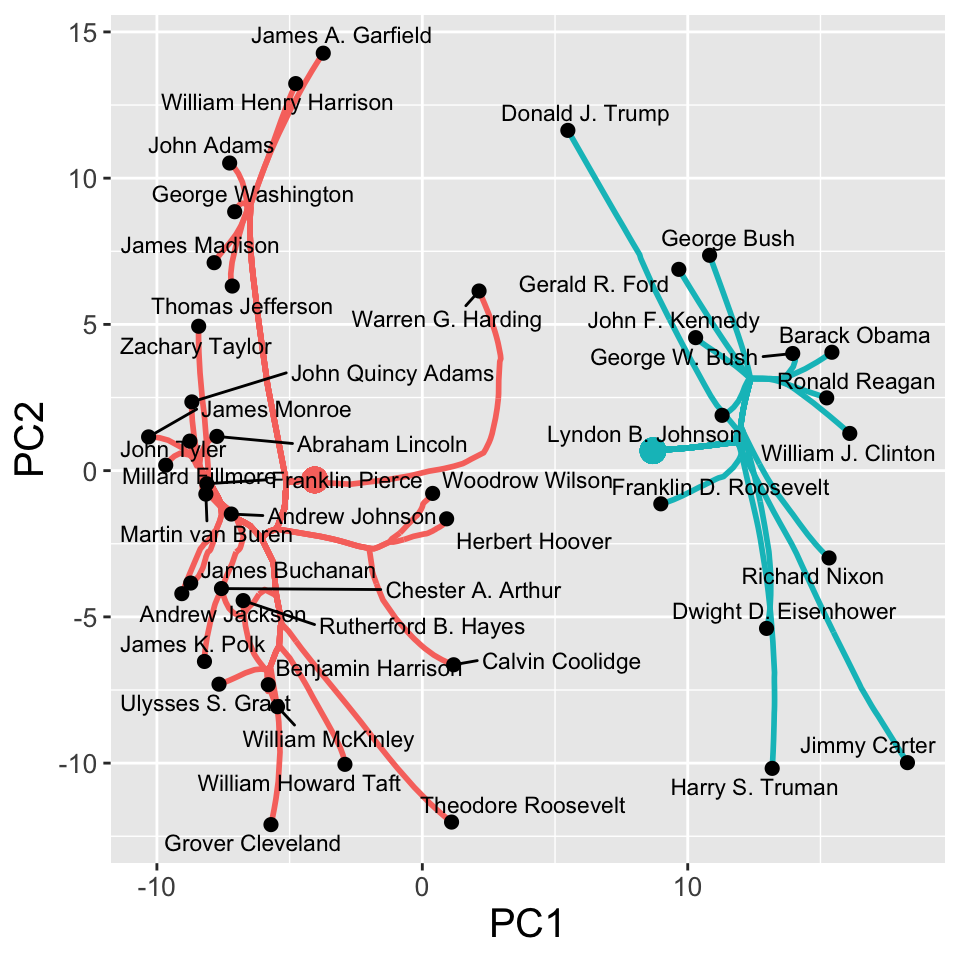
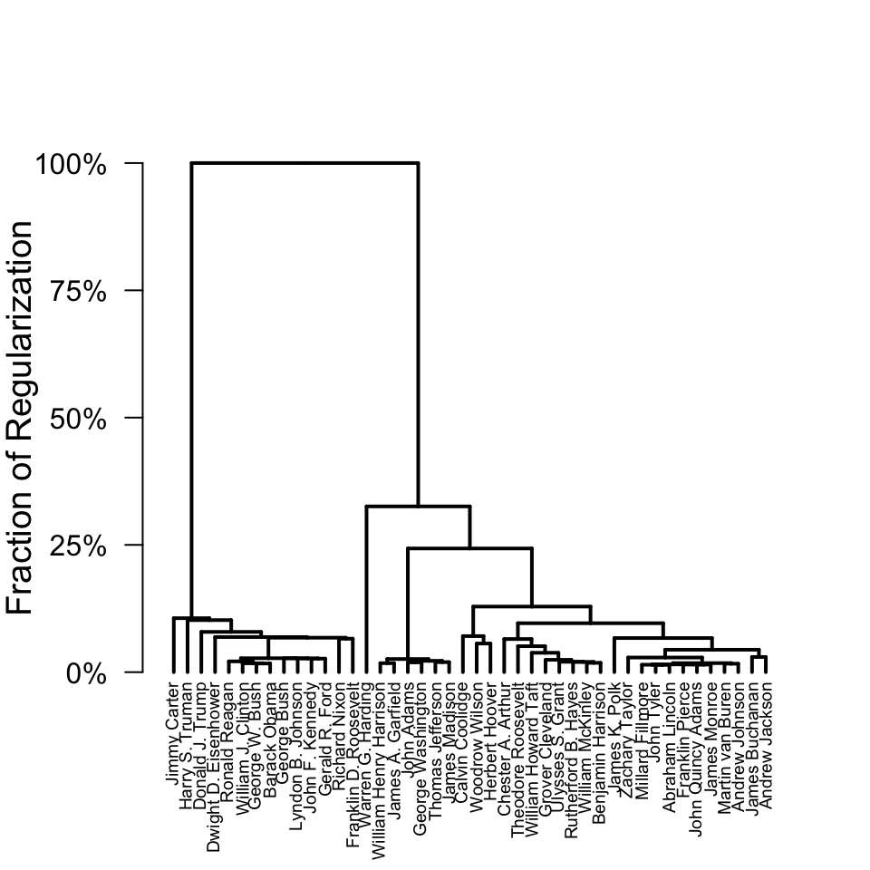

vignettes/ClustRVizDetails.Rmd
ClustRVizDetails.RmdThe clustRviz package intends to make fitting and visualizing CARP and CBASS solution paths an easy process. In the Getting Started vignettee we provide a quick start guide for basic usage, fitting, and plotting. In this vignette, we build on the basics and provide a more detailed explanation for the variety of options available in clustRviz.
The starting point for CARP is the Convex Clustering (Hocking et al. 2011; Chi and Lange 2015; Tan and Witten 2015) problem:
\[ \underset{\boldsymbol{U}}{\textrm{minimize}} \;\; \frac{1}{2} \| \boldsymbol{X} - \boldsymbol{U} \|_F^2 + \lambda \sum_{ l < m} w_{l,m} \| \boldsymbol{u}_l - \boldsymbol{u}_m \|_2 \]
where \(\boldsymbol{X}\) is an \(p \times n\) input data matrix, consisting of \(p\) measurements on \(n\) subjects, \(\lambda > 0\) a regularization parameter, and \(w_{l,m}>0\) a weight for each pair of observations; here \(\| . \|_F\) and \(\| . \|_2\) denote the Frobenius norm and \(\ell_2\) norm, respectively.
Briefly, Convex Clustering seeks to find and estimate,\(\hat{\boldsymbol{U}} \in \mathbb{R}^{p\times n}\), such that it is faithful to the original data (Frobenius norm loss term) while also encouraging fusions among observations (\(\ell_2\) regularization between columns of \(\boldsymbol{U}\), denoted \(u_l\)). At small values of regularization, \(\lambda \approx 0\), Convex Clustering returns estimates similar to the original data with little or no fusion among observations. As regularization increases, more fusions occur and Convex Clustering returns estimates such that \(\| \hat{\boldsymbol{u}}_l - \hat{\boldsymbol{u}}_m \| = 0\). When such fusions occur we say that observations \(l\) and \(m\) belong to the same cluster. Taken to the extreme, sufficiently large values of \(\lambda\) result in all observations belonging to the same cluster.
When fitting for multiple values of \(\lambda\) Convex Clustering results in a continious solution path of clustering solutions. One solution method for the problem above is via the alternatving direction method of multipliers (ADMM) (Boyd et al. 2011). For a given \(\lambda\), Convex Clustering can be solved by iteratively applying ADMM updates until convergence (Chi and Lange 2015). However in order to obtain a full path of clustering solutions, this method must be employed for multiple \(\lambda_k\) which is computationally expensive.
To address the computational burden of Convex Clustering, we utilize the framework of Algorithmic Regularization Paths (Hu, Chi, and Allen 2016) to develop efficient methods for approximating the Convex Clustering and Biclustering solution paths: Convex Clustering via Algorithmic Regularization Paths (CARP) and Convex Biclustering via Algorthmic Regularization with Small Steps (CBASS), respectively. Rather than fully solving the Convex Clustering optimization problem at each \(\lambda_k\), we instead perform single updates combined with gradual increases in regularization at each step. As regularization increases with each iteration, the column differences of the iterates, \(\| \boldsymbol{u}^{(k)}_l - \boldsymbol{u}^{(k)}_m \|\), eventally become \(0\) for all \(l,m\). In contrast to traditional iterative solution techniques, we instead employ the iterates themselves as approximations for the true solution path. Remarkably, this approximation not only works well empirically, but can be shown theoretically to well approximate the true Convex Clustering solution path.
While the CARP and CBASS functions provides several reasonable default choices for weights, algorithms, etc, it is important to know their details if one wishes to compute more customized clustering choices. Here we examine several of the inputs to CARP and CBASS, as well as their preprocessing technqiues
Here we use a dataset of presidential speechs obtained from The American Presidency Project to illustrate the use of clustRviz. The presidential speech data set contains the top 75 most variable log-transformed word counts of each US president, aggregated over several speeches. Additional text processing such as removing stop words and stemming have been done via the tm package.
Let’s begin by loading our package and the dataset:
library(clustRviz) data("presidential_speech") Xdat <- presidential_speech row_labels <- rownames(Xdat) col_labels <- colnames(Xdat) Xdat[1:5,1:5] #> amount appropri british cent commerci #> Abraham Lincoln 3.433987 2.397895 1.791759 2.564949 2.708050 #> Andrew Jackson 4.248495 4.663439 2.995732 1.945910 3.828641 #> Andrew Johnson 4.025352 3.091042 2.833213 3.332205 2.772589 #> Barack Obama 1.386294 0.000000 0.000000 1.386294 0.000000 #> Benjamin Harrison 4.060443 4.174387 2.302585 4.304065 3.663562 head(row_labels) #> [1] "Abraham Lincoln" "Andrew Jackson" "Andrew Johnson" #> [4] "Barack Obama" "Benjamin Harrison" "Calvin Coolidge" head(col_labels) #> [1] "amount" "appropri" "british" "cent" "commerci" #> [6] "commission"
An important first choice before clustering is whether to center and scale our observations. Centering is typically appropriate, and is done by default for CARP and CBASS. The choice of scaling is left to the user discression, but should typically be applied if measurements are a vastly different scales. In the case of the presidental speech dataset, all variables are of the same type and so we do not scale our data matrix.
# Centering data before computing the CARP solution path Xdat.preprocessed <- scale(Xdat, center=TRUE, scale=FALSE)
In the CARP function this preprocessing is done via the X.center and X.scale arguements. If the data is pre-processed outside of CARP, as is the case here, these options may be set to FALSE; by default, CARP with center but not scale an inputted data matrix.
Both CARP and CBASS (below) admit several options for computing the (bi)clustering solution path. While we will encounter many options along the way, see the relevant documentation for full details.
Similarly, the CBASS function also requires that data preprocessed prior usage. Because CBASS clusters both observations and variables, here centering is done by subtracting away the global mean of our data matrix.
# Subtracting global mean before computing the CBASS solution path Xdat.bi <- Xdat Xdat.bi.preprocessed <- Xdat - mean(Xdat)
While not directly addressed by CARP or CBASS, high dimensional measurements can present a challenge for clustering methods. Owing to the “curse of dimensionality”, high dimensional measurements may deliver sub-optimal performance for distance-based methods generally. As such, performing dimensionality reduction before applying CARP may result in more interpretable clusters. We leave the choice of dimensionality reduction to the end-user, but still recommend the reduced feature set be pre-processed as described above.
For the purpose of visualuization, CARP addresses the problem of high dimenstionality by visualizing the principal components of the data by default.
The use of a good weight scheme is essential to getting reasonable clustering results from convex clustering (CARP) and convex biclustering (CBASS). The clustRviz package provides a useful data-driven default weight scheme as well as allowing users to supply their own weights. Clustering weights are discussed in much more detail in the clustRviz weights vignette.
clustRviz aims to make it easy to compute the CARP and CBASS solution paths, and to quickly begin exploring the results. To this end, many reasonable choices regarding both preprocessing and inputs disucussed above are made by default, allowing for solution path to be computed from the raw data alone. In the case of CARP, for example, we may fit the compute the solution path for the presidents data via the CARP function:
carp_fit <- CARP(X=Xdat)
Once completed, we can examine a brief summary of the fitted object:
carp_fit #> CARP Fit Summary #> ==================== #> #> Algorithm: CARP (t = 1.05) #> Fit Time: 0.134 secs #> Total Time: 0.734 secs #> #> Number of Observations: 44 #> Number of Variables: 75 #> #> Pre-processing options: #> - Columnwise centering: TRUE #> - Columnwise scaling: FALSE #> #> Weights: #> - Source: Radial Basis Function Kernel Weights #> - Distance Metric: Euclidean #> - Scale parameter (phi): 0.01 [Data-Driven] #> - Sparsified: 4 Nearest Neighbors [Data-Driven]
The output above displays characteristics of our data, such as sample size and number of variables, and also gives a preview of the raw input. Additionally, the summary provides information regarding both data pre-processing and weight computations. From the above we see that CARP has by default: (i) centered our data, (ii) computed distance-based weights using a gaussian kernel with \(\phi=.01\), and (iii) created a sparse set of weights using \(k=4\) nearest neighbors. Finally, the summary also provides information about the algorithm, here CARP-VIZ, as well as the available visualizations.
While CARP’s default choices work well in most scenarios, the user can change almost all aspects of the algorithm. For example, if we wish to alter the default pre-processing and weight choices:
CARP(Xdat, X.center = TRUE, X.scale = TRUE, weights = sparse_rbf_kernel_weights(phi = 1e-5, dist.method = "canberra", k = 5))
Indeed, in the case where strong a priori information concerning clusters is available, distance-based weight computations may be avoided altogether and user-specified weights given directly via the weights argument. See the accompaning weights vignette for details.
CBASS solutions can be fit in a similar manner:
cbass_fit <- CBASS(X=Xdat)
And display its output:
cbass_fit #> CBASS Fit Summary #> ==================== #> #> Algorithm: CBASS (t = 1.01) #> Fit Time: 1.570 secs #> Total Time: 3.444 secs #> #> Number of Rows: 44 #> Number of Columns: 75 #> #> Pre-processing options: #> - Global centering: TRUE #> #> Row Weights: #> - Source: Radial Basis Function Kernel Weights #> - Distance Metric: Euclidean #> - Scale parameter (phi): 0.01 [Data-Driven] #> - Sparsified: 4 Nearest Neighbors [Data-Driven] #> #> Column Weights: #> - Source: Radial Basis Function Kernel Weights #> - Distance Metric: Euclidean #> - Scale parameter (phi): 0.01 [Data-Driven] #> - Sparsified: 2 Nearest Neighbors [Data-Driven]
Another input into the fitting procedure is the algorithm type. By default both CARP and CBASS a fixed step-size version of algorithmic regularization. If the exact dendrogram is of foremost importance, the VIZ-type back-tracking extentions may be used by passing back_track = TRUE. We note, however, that back-tracking may be computationally burdensome, particularly for larger data sets. The dendrograms produced by CARP and CBASS (particularly with small step-sizes) are sufficient for the vast majority of applications.
In the example below we again fit the presidental speech dataset using the default carp algorithim with step size \(t=1.1\)
carp_fit_fixed_t <- CARP(Xdat, t = 1.1) carp_fit_fixed_t #> CARP Fit Summary #> ==================== #> #> Algorithm: CARP (t = 1.1) #> Fit Time: 0.078 secs #> Total Time: 0.710 secs #> #> Number of Observations: 44 #> Number of Variables: 75 #> #> Pre-processing options: #> - Columnwise centering: TRUE #> - Columnwise scaling: FALSE #> #> Weights: #> - Source: Radial Basis Function Kernel Weights #> - Distance Metric: Euclidean #> - Scale parameter (phi): 0.01 [Data-Driven] #> - Sparsified: 4 Nearest Neighbors [Data-Driven]
By default both CARP and CBASS perform \(\ell_2\) regularization between observation pairs to encourage fusions, and hence cluster formation. If \(\ell_1\) regularization is preferred for whatever reason, the norm argument may be set to 1.
Once fit, the clustering solution of both CARP and CBASS may be examined via three related “accessor” functions:
get_cluster_labels: to get a named factor vector of cluster labelsget_cluster_centroids: to get a matrix of cluster centroidsget_clustered_data: to get the clustered data matrix (data replaced by estimated centroids)The interface for these functions is essentially the same for CARP and CBASS objects, though the exact meaning of “centroids” varies between the problems (vectors for CARP and scalars for CBASS). The latter two functions also support a refit flag, which determines whether the convex clustering centroids or the naive centroids (based only on the convex clustering labels) are returned.
For example, we can extract the clustering labels from our carp_fit corresponding to a \(k = 2\) cluster solution:
cluster_labels <- get_cluster_labels(carp_fit, k = 2) head(cluster_labels) #> Abraham Lincoln Andrew Jackson Andrew Johnson Barack Obama #> cluster_1 cluster_1 cluster_1 cluster_2 #> Benjamin Harrison Calvin Coolidge #> cluster_1 cluster_1 #> Levels: cluster_1 cluster_2
We see a rather inbalanced data set (the “pre-WWII” cluster is much larger):
table(cluster_labels) #> cluster_labels #> cluster_1 cluster_2 #> 30 14
Similarly, to get the cluster means, we use the get_cluster_centroids function:
get_cluster_centroids(carp_fit, k = 2) #> amount appropri british cent commerci commission consider #> [1,] 3.247043 3.226682 2.3124551 2.0551206 2.7439237 2.3802731 3.63590 #> [2,] 1.862722 2.042501 0.5157932 0.7925161 0.9780746 0.1980421 1.46525 #> develop expenditur farm feder fiscal help indian #> [1,] 2.337113 3.088539 1.191574 2.378937 2.430556 0.9302646 2.772808 #> [2,] 3.715357 1.996894 2.392863 4.032946 2.582249 4.3600998 1.028310 #> intercours island june mail mexico navi need #> [1,] 2.346998 2.2486963 2.207865 2.0366255 2.4085862 2.8553629 2.610077 #> [2,] 0.000000 0.9483649 1.273441 0.4409847 0.7222947 0.9645195 4.444242 #> per provis receipt reform regard report shall subject #> [1,] 2.053577 3.316586 2.4005575 1.573253 2.881303 3.188971 3.873702 3.873460 #> [2,] 1.529186 1.351412 0.7369229 2.950234 1.399618 2.504706 2.266559 1.660877 #> territori treasuri treati upon vessel america bank incom #> [1,] 3.207658 3.270253 3.474962 4.470278 2.8743947 2.114410 2.464109 1.341383 #> [2,] 1.031974 1.170382 1.850235 2.707913 0.5064341 4.545829 1.961930 3.339435 #> million price spain articl cut dollar econom #> [1,] 1.794258 2.081976 1.9433860 2.3807624 0.7759532 1.480457 1.646237 #> [2,] 4.044070 3.083916 0.1980421 0.2475526 3.1468759 3.273746 3.999372 #> women educ school bill tariff unemploy weapon #> [1,] 0.5921557 1.902443 1.312848 1.870695 1.9435594 0.4278973 0.2676695 #> [2,] 2.9420389 3.463114 3.235803 2.843507 0.8874667 2.7956399 2.7877462 #> get method farmer challeng achiev democraci area #> [1,] 0.5174374 1.509951 1.134142 0.3849688 1.060422 0.3436318 0.9664067 #> [2,] 3.0255971 1.461203 2.349569 3.1210443 3.403615 2.5199520 3.0214103 #> billion problem basic budget goal job level #> [1,] 0.2822107 1.241074 0.1439163 0.4619983 0.1229626 0.1425555 0.5467032 #> [2,] 3.7429589 3.659555 2.8387802 3.7959956 3.2118895 3.9587172 3.0683132 #> nuclear percent program spend technolog today tonight #> [1,] 0.000000 0.1476939 0.4781129 0.2886231 0.02310491 0.3258551 0.000000 #> [2,] 2.559875 3.4095268 4.4328005 3.1180550 2.68228351 3.7233467 2.596381 #> worker inflat soviet #> [1,] 0.3094282 0.3914679 0.000000 #> [2,] 3.1347856 2.5319042 2.493221
Since we performed convex clustering here, our centroids are \(p\)-vectors. By default, the naive centroids are used; if we prefer the exact convex clustering solution, we can pass the refit = FALSE flag:
get_cluster_centroids(carp_fit, k = 2, refit = FALSE) #> amount appropri british cent commerci commission consider #> [1,] 3.155728 3.148065 2.1953481 1.9647108 2.622744 2.2361246 3.489258 #> [2,] 2.058397 2.210968 0.7667368 0.9862515 1.237746 0.5069316 1.779483 #> develop expenditur farm feder fiscal help indian #> [1,] 2.424643 3.012971 1.266860 2.483571 2.437900 1.152671 2.659366 #> [2,] 3.527792 2.158826 2.231534 3.808730 2.566511 3.883514 1.271401 #> intercours island june mail mexico navi need #> [1,] 2.1935090 2.161143 2.144818 1.9284549 2.2943682 2.729938 2.726907 #> [2,] 0.3289057 1.135979 1.408541 0.6727789 0.9670476 1.233286 4.193891 #> per provis receipt reform regard report shall subject #> [1,] 2.011753 3.183595 2.2906826 1.661924 2.784559 3.138733 3.765006 3.728682 #> [2,] 1.618809 1.636394 0.9723691 2.760226 1.606927 2.612360 2.499479 1.971115 #> territori treasuri treati upon vessel america bank incom #> [1,] 3.061643 3.128592 3.365123 4.350888 2.7191839 2.269599 2.428955 1.472401 #> [2,] 1.344863 1.473940 2.085605 2.963748 0.8390288 4.213282 2.037260 3.058681 #> million price spain articl cut dollar econom women #> [1,] 1.939146 2.144216 1.828425 2.2402022 0.9309466 1.597334 1.796562 0.7461207 #> [2,] 3.733596 2.950544 0.444386 0.5487529 2.8147471 3.023297 3.677248 2.6121139 #> educ school bill tariff unemploy weapon get method #> [1,] 2.002487 1.436163 1.933006 1.866371 0.5819261 0.4351889 0.6825409 1.502273 #> [2,] 3.248734 2.971558 2.709984 1.052870 2.4655782 2.4287760 2.6718040 1.477654 #> farmer challeng achiev democraci area billion problem basic #> [1,] 1.209656 0.5636847 1.213491 0.4858199 1.100357 0.509604 1.393858 0.3210233 #> [2,] 2.187753 2.7380816 3.075610 2.2152632 2.734374 3.255688 3.332161 2.4592651 #> budget goal job level nuclear percent program #> [1,] 0.6806464 0.3271903 0.3964664 0.7113691 0.1704463 0.3647129 0.7365316 #> [2,] 3.3274639 2.7742589 3.4146225 2.7154577 2.1946333 2.9444860 3.8790462 #> spend technolog today tonight worker inflat soviet #> [1,] 0.4756603 0.2001397 0.5470925 0.1728774 0.4958418 0.5305127 0.1660077 #> [2,] 2.7172610 2.3029232 3.2492666 2.2259298 2.7353280 2.2339511 2.1374900
We can instead supply the percent argument to specify \(\lambda\) (or more precisely, \(\lambda / \lambda_{\text{max}}\)) rather than the numer of clusters explicitly. For example, if we are interested at the clustering solution about \(25\%\) of the way along the regularization path:
get_cluster_labels(carp_fit, percent = 0.25) #> Abraham Lincoln Andrew Jackson Andrew Johnson #> cluster_1 cluster_1 cluster_1 #> Barack Obama Benjamin Harrison Calvin Coolidge #> cluster_2 cluster_1 cluster_1 #> Chester A. Arthur Donald J. Trump Dwight D. Eisenhower #> cluster_1 cluster_2 cluster_2 #> Franklin D. Roosevelt Franklin Pierce George Bush #> cluster_2 cluster_1 cluster_2 #> George W. Bush George Washington Gerald R. Ford #> cluster_2 cluster_1 cluster_2 #> Grover Cleveland Harry S. Truman Herbert Hoover #> cluster_1 cluster_2 cluster_1 #> James A. Garfield James Buchanan James K. Polk #> cluster_1 cluster_1 cluster_1 #> James Madison James Monroe Jimmy Carter #> cluster_1 cluster_1 cluster_2 #> John Adams John F. Kennedy John Quincy Adams #> cluster_1 cluster_2 cluster_1 #> John Tyler Lyndon B. Johnson Martin van Buren #> cluster_1 cluster_2 cluster_1 #> Millard Fillmore Richard Nixon Ronald Reagan #> cluster_1 cluster_2 cluster_2 #> Rutherford B. Hayes Theodore Roosevelt Thomas Jefferson #> cluster_1 cluster_1 cluster_1 #> Ulysses S. Grant Warren G. Harding William Henry Harrison #> cluster_1 cluster_3 cluster_1 #> William Howard Taft William J. Clinton William McKinley #> cluster_1 cluster_2 cluster_1 #> Woodrow Wilson Zachary Taylor #> cluster_1 cluster_1 #> Levels: cluster_1 cluster_2 cluster_3
We see that our data is clearly falls into three clusters.
Simiarly to CARP objects, CBASS clustering solutions may also be extracted via the three accessor functions. The CBASS methods allow one of three parameters to be used to specify the solution:
k.row: the number of row clustersk.col: the number of column clusterspercent: the percent of total regularizationOther than this, the behavior of get_cluster_labels, and get_clustered_data is roughly the same:
# CBASS Cluster Labels for rows (observations = default) get_cluster_labels(cbass_fit, percent = 0.85, type = "row") #> Abraham Lincoln Andrew Jackson Andrew Johnson #> cluster_1 cluster_1 cluster_1 #> Barack Obama Benjamin Harrison Calvin Coolidge #> cluster_2 cluster_1 cluster_1 #> Chester A. Arthur Donald J. Trump Dwight D. Eisenhower #> cluster_1 cluster_2 cluster_2 #> Franklin D. Roosevelt Franklin Pierce George Bush #> cluster_2 cluster_1 cluster_2 #> George W. Bush George Washington Gerald R. Ford #> cluster_2 cluster_1 cluster_2 #> Grover Cleveland Harry S. Truman Herbert Hoover #> cluster_1 cluster_2 cluster_1 #> James A. Garfield James Buchanan James K. Polk #> cluster_1 cluster_1 cluster_1 #> James Madison James Monroe Jimmy Carter #> cluster_1 cluster_1 cluster_2 #> John Adams John F. Kennedy John Quincy Adams #> cluster_1 cluster_2 cluster_1 #> John Tyler Lyndon B. Johnson Martin van Buren #> cluster_1 cluster_2 cluster_1 #> Millard Fillmore Richard Nixon Ronald Reagan #> cluster_1 cluster_2 cluster_2 #> Rutherford B. Hayes Theodore Roosevelt Thomas Jefferson #> cluster_1 cluster_1 cluster_1 #> Ulysses S. Grant Warren G. Harding William Henry Harrison #> cluster_1 cluster_1 cluster_1 #> William Howard Taft William J. Clinton William McKinley #> cluster_1 cluster_2 cluster_1 #> Woodrow Wilson Zachary Taylor #> cluster_1 cluster_1 #> Levels: cluster_1 cluster_2 # CBASS Cluster Labels for columns (features) get_cluster_labels(cbass_fit, percent = 0.85, type = "col") #> amount appropri british cent commerci commission consider #> cluster_1 cluster_1 cluster_1 cluster_1 cluster_1 cluster_1 cluster_1 #> develop expenditur farm feder fiscal help indian #> cluster_1 cluster_1 cluster_1 cluster_1 cluster_1 cluster_1 cluster_1 #> intercours island june mail mexico navi need #> cluster_1 cluster_1 cluster_1 cluster_1 cluster_1 cluster_1 cluster_1 #> per provis receipt reform regard report shall #> cluster_1 cluster_1 cluster_1 cluster_1 cluster_1 cluster_1 cluster_1 #> subject territori treasuri treati upon vessel america #> cluster_1 cluster_1 cluster_1 cluster_1 cluster_1 cluster_1 cluster_1 #> bank incom million price spain articl cut #> cluster_1 cluster_1 cluster_1 cluster_1 cluster_1 cluster_1 cluster_1 #> dollar econom women educ school bill tariff #> cluster_1 cluster_1 cluster_1 cluster_1 cluster_1 cluster_1 cluster_1 #> unemploy weapon get method farmer challeng achiev #> cluster_1 cluster_1 cluster_1 cluster_1 cluster_1 cluster_1 cluster_1 #> democraci area billion problem basic budget goal #> cluster_1 cluster_1 cluster_1 cluster_1 cluster_1 cluster_1 cluster_1 #> job level nuclear percent program spend technolog #> cluster_1 cluster_1 cluster_1 cluster_1 cluster_1 cluster_1 cluster_1 #> today tonight worker inflat soviet #> cluster_1 cluster_1 cluster_1 cluster_1 cluster_1 #> Levels: cluster_1 # CBASS Solution - naive centroids get_clustered_data(cbass_fit, percent = 0.85) #> amount appropri british cent commerci commission #> Abraham Lincoln 1.720896 1.720896 1.720896 1.720896 1.720896 1.720896 #> Andrew Jackson 1.720896 1.720896 1.720896 1.720896 1.720896 1.720896 #> Andrew Johnson 1.720896 1.720896 1.720896 1.720896 1.720896 1.720896 #> Barack Obama 2.387744 2.387744 2.387744 2.387744 2.387744 2.387744 #> Benjamin Harrison 1.720896 1.720896 1.720896 1.720896 1.720896 1.720896 #> Calvin Coolidge 1.720896 1.720896 1.720896 1.720896 1.720896 1.720896 #> Chester A. Arthur 1.720896 1.720896 1.720896 1.720896 1.720896 1.720896 #> Donald J. Trump 2.387744 2.387744 2.387744 2.387744 2.387744 2.387744 #> Dwight D. Eisenhower 2.387744 2.387744 2.387744 2.387744 2.387744 2.387744 #> Franklin D. Roosevelt 2.387744 2.387744 2.387744 2.387744 2.387744 2.387744 #> Franklin Pierce 1.720896 1.720896 1.720896 1.720896 1.720896 1.720896 #> George Bush 2.387744 2.387744 2.387744 2.387744 2.387744 2.387744 #> George W. Bush 2.387744 2.387744 2.387744 2.387744 2.387744 2.387744 #> George Washington 1.720896 1.720896 1.720896 1.720896 1.720896 1.720896 #> Gerald R. Ford 2.387744 2.387744 2.387744 2.387744 2.387744 2.387744 #> Grover Cleveland 1.720896 1.720896 1.720896 1.720896 1.720896 1.720896 #> Harry S. Truman 2.387744 2.387744 2.387744 2.387744 2.387744 2.387744 #> Herbert Hoover 1.720896 1.720896 1.720896 1.720896 1.720896 1.720896 #> James A. Garfield 1.720896 1.720896 1.720896 1.720896 1.720896 1.720896 #> James Buchanan 1.720896 1.720896 1.720896 1.720896 1.720896 1.720896 #> James K. Polk 1.720896 1.720896 1.720896 1.720896 1.720896 1.720896 #> James Madison 1.720896 1.720896 1.720896 1.720896 1.720896 1.720896 #> James Monroe 1.720896 1.720896 1.720896 1.720896 1.720896 1.720896 #> Jimmy Carter 2.387744 2.387744 2.387744 2.387744 2.387744 2.387744 #> John Adams 1.720896 1.720896 1.720896 1.720896 1.720896 1.720896 #> John F. Kennedy 2.387744 2.387744 2.387744 2.387744 2.387744 2.387744 #> John Quincy Adams 1.720896 1.720896 1.720896 1.720896 1.720896 1.720896 #> John Tyler 1.720896 1.720896 1.720896 1.720896 1.720896 1.720896 #> Lyndon B. Johnson 2.387744 2.387744 2.387744 2.387744 2.387744 2.387744 #> Martin van Buren 1.720896 1.720896 1.720896 1.720896 1.720896 1.720896 #> Millard Fillmore 1.720896 1.720896 1.720896 1.720896 1.720896 1.720896 #> Richard Nixon 2.387744 2.387744 2.387744 2.387744 2.387744 2.387744 #> Ronald Reagan 2.387744 2.387744 2.387744 2.387744 2.387744 2.387744 #> Rutherford B. Hayes 1.720896 1.720896 1.720896 1.720896 1.720896 1.720896 #> Theodore Roosevelt 1.720896 1.720896 1.720896 1.720896 1.720896 1.720896 #> Thomas Jefferson 1.720896 1.720896 1.720896 1.720896 1.720896 1.720896 #> Ulysses S. Grant 1.720896 1.720896 1.720896 1.720896 1.720896 1.720896 #> Warren G. Harding 1.720896 1.720896 1.720896 1.720896 1.720896 1.720896 #> William Henry Harrison 1.720896 1.720896 1.720896 1.720896 1.720896 1.720896 #> William Howard Taft 1.720896 1.720896 1.720896 1.720896 1.720896 1.720896 #> William J. Clinton 2.387744 2.387744 2.387744 2.387744 2.387744 2.387744 #> William McKinley 1.720896 1.720896 1.720896 1.720896 1.720896 1.720896 #> Woodrow Wilson 1.720896 1.720896 1.720896 1.720896 1.720896 1.720896 #> Zachary Taylor 1.720896 1.720896 1.720896 1.720896 1.720896 1.720896 #> consider develop expenditur farm feder fiscal #> Abraham Lincoln 1.720896 1.720896 1.720896 1.720896 1.720896 1.720896 #> Andrew Jackson 1.720896 1.720896 1.720896 1.720896 1.720896 1.720896 #> Andrew Johnson 1.720896 1.720896 1.720896 1.720896 1.720896 1.720896 #> Barack Obama 2.387744 2.387744 2.387744 2.387744 2.387744 2.387744 #> Benjamin Harrison 1.720896 1.720896 1.720896 1.720896 1.720896 1.720896 #> Calvin Coolidge 1.720896 1.720896 1.720896 1.720896 1.720896 1.720896 #> Chester A. Arthur 1.720896 1.720896 1.720896 1.720896 1.720896 1.720896 #> Donald J. Trump 2.387744 2.387744 2.387744 2.387744 2.387744 2.387744 #> Dwight D. Eisenhower 2.387744 2.387744 2.387744 2.387744 2.387744 2.387744 #> Franklin D. Roosevelt 2.387744 2.387744 2.387744 2.387744 2.387744 2.387744 #> Franklin Pierce 1.720896 1.720896 1.720896 1.720896 1.720896 1.720896 #> George Bush 2.387744 2.387744 2.387744 2.387744 2.387744 2.387744 #> George W. Bush 2.387744 2.387744 2.387744 2.387744 2.387744 2.387744 #> George Washington 1.720896 1.720896 1.720896 1.720896 1.720896 1.720896 #> Gerald R. Ford 2.387744 2.387744 2.387744 2.387744 2.387744 2.387744 #> Grover Cleveland 1.720896 1.720896 1.720896 1.720896 1.720896 1.720896 #> Harry S. Truman 2.387744 2.387744 2.387744 2.387744 2.387744 2.387744 #> Herbert Hoover 1.720896 1.720896 1.720896 1.720896 1.720896 1.720896 #> James A. Garfield 1.720896 1.720896 1.720896 1.720896 1.720896 1.720896 #> James Buchanan 1.720896 1.720896 1.720896 1.720896 1.720896 1.720896 #> James K. Polk 1.720896 1.720896 1.720896 1.720896 1.720896 1.720896 #> James Madison 1.720896 1.720896 1.720896 1.720896 1.720896 1.720896 #> James Monroe 1.720896 1.720896 1.720896 1.720896 1.720896 1.720896 #> Jimmy Carter 2.387744 2.387744 2.387744 2.387744 2.387744 2.387744 #> John Adams 1.720896 1.720896 1.720896 1.720896 1.720896 1.720896 #> John F. Kennedy 2.387744 2.387744 2.387744 2.387744 2.387744 2.387744 #> John Quincy Adams 1.720896 1.720896 1.720896 1.720896 1.720896 1.720896 #> John Tyler 1.720896 1.720896 1.720896 1.720896 1.720896 1.720896 #> Lyndon B. Johnson 2.387744 2.387744 2.387744 2.387744 2.387744 2.387744 #> Martin van Buren 1.720896 1.720896 1.720896 1.720896 1.720896 1.720896 #> Millard Fillmore 1.720896 1.720896 1.720896 1.720896 1.720896 1.720896 #> Richard Nixon 2.387744 2.387744 2.387744 2.387744 2.387744 2.387744 #> Ronald Reagan 2.387744 2.387744 2.387744 2.387744 2.387744 2.387744 #> Rutherford B. Hayes 1.720896 1.720896 1.720896 1.720896 1.720896 1.720896 #> Theodore Roosevelt 1.720896 1.720896 1.720896 1.720896 1.720896 1.720896 #> Thomas Jefferson 1.720896 1.720896 1.720896 1.720896 1.720896 1.720896 #> Ulysses S. Grant 1.720896 1.720896 1.720896 1.720896 1.720896 1.720896 #> Warren G. Harding 1.720896 1.720896 1.720896 1.720896 1.720896 1.720896 #> William Henry Harrison 1.720896 1.720896 1.720896 1.720896 1.720896 1.720896 #> William Howard Taft 1.720896 1.720896 1.720896 1.720896 1.720896 1.720896 #> William J. Clinton 2.387744 2.387744 2.387744 2.387744 2.387744 2.387744 #> William McKinley 1.720896 1.720896 1.720896 1.720896 1.720896 1.720896 #> Woodrow Wilson 1.720896 1.720896 1.720896 1.720896 1.720896 1.720896 #> Zachary Taylor 1.720896 1.720896 1.720896 1.720896 1.720896 1.720896 #> help indian intercours island june mail #> Abraham Lincoln 1.720896 1.720896 1.720896 1.720896 1.720896 1.720896 #> Andrew Jackson 1.720896 1.720896 1.720896 1.720896 1.720896 1.720896 #> Andrew Johnson 1.720896 1.720896 1.720896 1.720896 1.720896 1.720896 #> Barack Obama 2.387744 2.387744 2.387744 2.387744 2.387744 2.387744 #> Benjamin Harrison 1.720896 1.720896 1.720896 1.720896 1.720896 1.720896 #> Calvin Coolidge 1.720896 1.720896 1.720896 1.720896 1.720896 1.720896 #> Chester A. Arthur 1.720896 1.720896 1.720896 1.720896 1.720896 1.720896 #> Donald J. Trump 2.387744 2.387744 2.387744 2.387744 2.387744 2.387744 #> Dwight D. Eisenhower 2.387744 2.387744 2.387744 2.387744 2.387744 2.387744 #> Franklin D. Roosevelt 2.387744 2.387744 2.387744 2.387744 2.387744 2.387744 #> Franklin Pierce 1.720896 1.720896 1.720896 1.720896 1.720896 1.720896 #> George Bush 2.387744 2.387744 2.387744 2.387744 2.387744 2.387744 #> George W. Bush 2.387744 2.387744 2.387744 2.387744 2.387744 2.387744 #> George Washington 1.720896 1.720896 1.720896 1.720896 1.720896 1.720896 #> Gerald R. Ford 2.387744 2.387744 2.387744 2.387744 2.387744 2.387744 #> Grover Cleveland 1.720896 1.720896 1.720896 1.720896 1.720896 1.720896 #> Harry S. Truman 2.387744 2.387744 2.387744 2.387744 2.387744 2.387744 #> Herbert Hoover 1.720896 1.720896 1.720896 1.720896 1.720896 1.720896 #> James A. Garfield 1.720896 1.720896 1.720896 1.720896 1.720896 1.720896 #> James Buchanan 1.720896 1.720896 1.720896 1.720896 1.720896 1.720896 #> James K. Polk 1.720896 1.720896 1.720896 1.720896 1.720896 1.720896 #> James Madison 1.720896 1.720896 1.720896 1.720896 1.720896 1.720896 #> James Monroe 1.720896 1.720896 1.720896 1.720896 1.720896 1.720896 #> Jimmy Carter 2.387744 2.387744 2.387744 2.387744 2.387744 2.387744 #> John Adams 1.720896 1.720896 1.720896 1.720896 1.720896 1.720896 #> John F. Kennedy 2.387744 2.387744 2.387744 2.387744 2.387744 2.387744 #> John Quincy Adams 1.720896 1.720896 1.720896 1.720896 1.720896 1.720896 #> John Tyler 1.720896 1.720896 1.720896 1.720896 1.720896 1.720896 #> Lyndon B. Johnson 2.387744 2.387744 2.387744 2.387744 2.387744 2.387744 #> Martin van Buren 1.720896 1.720896 1.720896 1.720896 1.720896 1.720896 #> Millard Fillmore 1.720896 1.720896 1.720896 1.720896 1.720896 1.720896 #> Richard Nixon 2.387744 2.387744 2.387744 2.387744 2.387744 2.387744 #> Ronald Reagan 2.387744 2.387744 2.387744 2.387744 2.387744 2.387744 #> Rutherford B. Hayes 1.720896 1.720896 1.720896 1.720896 1.720896 1.720896 #> Theodore Roosevelt 1.720896 1.720896 1.720896 1.720896 1.720896 1.720896 #> Thomas Jefferson 1.720896 1.720896 1.720896 1.720896 1.720896 1.720896 #> Ulysses S. Grant 1.720896 1.720896 1.720896 1.720896 1.720896 1.720896 #> Warren G. Harding 1.720896 1.720896 1.720896 1.720896 1.720896 1.720896 #> William Henry Harrison 1.720896 1.720896 1.720896 1.720896 1.720896 1.720896 #> William Howard Taft 1.720896 1.720896 1.720896 1.720896 1.720896 1.720896 #> William J. Clinton 2.387744 2.387744 2.387744 2.387744 2.387744 2.387744 #> William McKinley 1.720896 1.720896 1.720896 1.720896 1.720896 1.720896 #> Woodrow Wilson 1.720896 1.720896 1.720896 1.720896 1.720896 1.720896 #> Zachary Taylor 1.720896 1.720896 1.720896 1.720896 1.720896 1.720896 #> mexico navi need per provis receipt #> Abraham Lincoln 1.720896 1.720896 1.720896 1.720896 1.720896 1.720896 #> Andrew Jackson 1.720896 1.720896 1.720896 1.720896 1.720896 1.720896 #> Andrew Johnson 1.720896 1.720896 1.720896 1.720896 1.720896 1.720896 #> Barack Obama 2.387744 2.387744 2.387744 2.387744 2.387744 2.387744 #> Benjamin Harrison 1.720896 1.720896 1.720896 1.720896 1.720896 1.720896 #> Calvin Coolidge 1.720896 1.720896 1.720896 1.720896 1.720896 1.720896 #> Chester A. Arthur 1.720896 1.720896 1.720896 1.720896 1.720896 1.720896 #> Donald J. Trump 2.387744 2.387744 2.387744 2.387744 2.387744 2.387744 #> Dwight D. Eisenhower 2.387744 2.387744 2.387744 2.387744 2.387744 2.387744 #> Franklin D. Roosevelt 2.387744 2.387744 2.387744 2.387744 2.387744 2.387744 #> Franklin Pierce 1.720896 1.720896 1.720896 1.720896 1.720896 1.720896 #> George Bush 2.387744 2.387744 2.387744 2.387744 2.387744 2.387744 #> George W. Bush 2.387744 2.387744 2.387744 2.387744 2.387744 2.387744 #> George Washington 1.720896 1.720896 1.720896 1.720896 1.720896 1.720896 #> Gerald R. Ford 2.387744 2.387744 2.387744 2.387744 2.387744 2.387744 #> Grover Cleveland 1.720896 1.720896 1.720896 1.720896 1.720896 1.720896 #> Harry S. Truman 2.387744 2.387744 2.387744 2.387744 2.387744 2.387744 #> Herbert Hoover 1.720896 1.720896 1.720896 1.720896 1.720896 1.720896 #> James A. Garfield 1.720896 1.720896 1.720896 1.720896 1.720896 1.720896 #> James Buchanan 1.720896 1.720896 1.720896 1.720896 1.720896 1.720896 #> James K. Polk 1.720896 1.720896 1.720896 1.720896 1.720896 1.720896 #> James Madison 1.720896 1.720896 1.720896 1.720896 1.720896 1.720896 #> James Monroe 1.720896 1.720896 1.720896 1.720896 1.720896 1.720896 #> Jimmy Carter 2.387744 2.387744 2.387744 2.387744 2.387744 2.387744 #> John Adams 1.720896 1.720896 1.720896 1.720896 1.720896 1.720896 #> John F. Kennedy 2.387744 2.387744 2.387744 2.387744 2.387744 2.387744 #> John Quincy Adams 1.720896 1.720896 1.720896 1.720896 1.720896 1.720896 #> John Tyler 1.720896 1.720896 1.720896 1.720896 1.720896 1.720896 #> Lyndon B. Johnson 2.387744 2.387744 2.387744 2.387744 2.387744 2.387744 #> Martin van Buren 1.720896 1.720896 1.720896 1.720896 1.720896 1.720896 #> Millard Fillmore 1.720896 1.720896 1.720896 1.720896 1.720896 1.720896 #> Richard Nixon 2.387744 2.387744 2.387744 2.387744 2.387744 2.387744 #> Ronald Reagan 2.387744 2.387744 2.387744 2.387744 2.387744 2.387744 #> Rutherford B. Hayes 1.720896 1.720896 1.720896 1.720896 1.720896 1.720896 #> Theodore Roosevelt 1.720896 1.720896 1.720896 1.720896 1.720896 1.720896 #> Thomas Jefferson 1.720896 1.720896 1.720896 1.720896 1.720896 1.720896 #> Ulysses S. Grant 1.720896 1.720896 1.720896 1.720896 1.720896 1.720896 #> Warren G. Harding 1.720896 1.720896 1.720896 1.720896 1.720896 1.720896 #> William Henry Harrison 1.720896 1.720896 1.720896 1.720896 1.720896 1.720896 #> William Howard Taft 1.720896 1.720896 1.720896 1.720896 1.720896 1.720896 #> William J. Clinton 2.387744 2.387744 2.387744 2.387744 2.387744 2.387744 #> William McKinley 1.720896 1.720896 1.720896 1.720896 1.720896 1.720896 #> Woodrow Wilson 1.720896 1.720896 1.720896 1.720896 1.720896 1.720896 #> Zachary Taylor 1.720896 1.720896 1.720896 1.720896 1.720896 1.720896 #> reform regard report shall subject territori #> Abraham Lincoln 1.720896 1.720896 1.720896 1.720896 1.720896 1.720896 #> Andrew Jackson 1.720896 1.720896 1.720896 1.720896 1.720896 1.720896 #> Andrew Johnson 1.720896 1.720896 1.720896 1.720896 1.720896 1.720896 #> Barack Obama 2.387744 2.387744 2.387744 2.387744 2.387744 2.387744 #> Benjamin Harrison 1.720896 1.720896 1.720896 1.720896 1.720896 1.720896 #> Calvin Coolidge 1.720896 1.720896 1.720896 1.720896 1.720896 1.720896 #> Chester A. Arthur 1.720896 1.720896 1.720896 1.720896 1.720896 1.720896 #> Donald J. Trump 2.387744 2.387744 2.387744 2.387744 2.387744 2.387744 #> Dwight D. Eisenhower 2.387744 2.387744 2.387744 2.387744 2.387744 2.387744 #> Franklin D. Roosevelt 2.387744 2.387744 2.387744 2.387744 2.387744 2.387744 #> Franklin Pierce 1.720896 1.720896 1.720896 1.720896 1.720896 1.720896 #> George Bush 2.387744 2.387744 2.387744 2.387744 2.387744 2.387744 #> George W. Bush 2.387744 2.387744 2.387744 2.387744 2.387744 2.387744 #> George Washington 1.720896 1.720896 1.720896 1.720896 1.720896 1.720896 #> Gerald R. Ford 2.387744 2.387744 2.387744 2.387744 2.387744 2.387744 #> Grover Cleveland 1.720896 1.720896 1.720896 1.720896 1.720896 1.720896 #> Harry S. Truman 2.387744 2.387744 2.387744 2.387744 2.387744 2.387744 #> Herbert Hoover 1.720896 1.720896 1.720896 1.720896 1.720896 1.720896 #> James A. Garfield 1.720896 1.720896 1.720896 1.720896 1.720896 1.720896 #> James Buchanan 1.720896 1.720896 1.720896 1.720896 1.720896 1.720896 #> James K. Polk 1.720896 1.720896 1.720896 1.720896 1.720896 1.720896 #> James Madison 1.720896 1.720896 1.720896 1.720896 1.720896 1.720896 #> James Monroe 1.720896 1.720896 1.720896 1.720896 1.720896 1.720896 #> Jimmy Carter 2.387744 2.387744 2.387744 2.387744 2.387744 2.387744 #> John Adams 1.720896 1.720896 1.720896 1.720896 1.720896 1.720896 #> John F. Kennedy 2.387744 2.387744 2.387744 2.387744 2.387744 2.387744 #> John Quincy Adams 1.720896 1.720896 1.720896 1.720896 1.720896 1.720896 #> John Tyler 1.720896 1.720896 1.720896 1.720896 1.720896 1.720896 #> Lyndon B. Johnson 2.387744 2.387744 2.387744 2.387744 2.387744 2.387744 #> Martin van Buren 1.720896 1.720896 1.720896 1.720896 1.720896 1.720896 #> Millard Fillmore 1.720896 1.720896 1.720896 1.720896 1.720896 1.720896 #> Richard Nixon 2.387744 2.387744 2.387744 2.387744 2.387744 2.387744 #> Ronald Reagan 2.387744 2.387744 2.387744 2.387744 2.387744 2.387744 #> Rutherford B. Hayes 1.720896 1.720896 1.720896 1.720896 1.720896 1.720896 #> Theodore Roosevelt 1.720896 1.720896 1.720896 1.720896 1.720896 1.720896 #> Thomas Jefferson 1.720896 1.720896 1.720896 1.720896 1.720896 1.720896 #> Ulysses S. Grant 1.720896 1.720896 1.720896 1.720896 1.720896 1.720896 #> Warren G. Harding 1.720896 1.720896 1.720896 1.720896 1.720896 1.720896 #> William Henry Harrison 1.720896 1.720896 1.720896 1.720896 1.720896 1.720896 #> William Howard Taft 1.720896 1.720896 1.720896 1.720896 1.720896 1.720896 #> William J. Clinton 2.387744 2.387744 2.387744 2.387744 2.387744 2.387744 #> William McKinley 1.720896 1.720896 1.720896 1.720896 1.720896 1.720896 #> Woodrow Wilson 1.720896 1.720896 1.720896 1.720896 1.720896 1.720896 #> Zachary Taylor 1.720896 1.720896 1.720896 1.720896 1.720896 1.720896 #> treasuri treati upon vessel america bank #> Abraham Lincoln 1.720896 1.720896 1.720896 1.720896 1.720896 1.720896 #> Andrew Jackson 1.720896 1.720896 1.720896 1.720896 1.720896 1.720896 #> Andrew Johnson 1.720896 1.720896 1.720896 1.720896 1.720896 1.720896 #> Barack Obama 2.387744 2.387744 2.387744 2.387744 2.387744 2.387744 #> Benjamin Harrison 1.720896 1.720896 1.720896 1.720896 1.720896 1.720896 #> Calvin Coolidge 1.720896 1.720896 1.720896 1.720896 1.720896 1.720896 #> Chester A. Arthur 1.720896 1.720896 1.720896 1.720896 1.720896 1.720896 #> Donald J. Trump 2.387744 2.387744 2.387744 2.387744 2.387744 2.387744 #> Dwight D. Eisenhower 2.387744 2.387744 2.387744 2.387744 2.387744 2.387744 #> Franklin D. Roosevelt 2.387744 2.387744 2.387744 2.387744 2.387744 2.387744 #> Franklin Pierce 1.720896 1.720896 1.720896 1.720896 1.720896 1.720896 #> George Bush 2.387744 2.387744 2.387744 2.387744 2.387744 2.387744 #> George W. Bush 2.387744 2.387744 2.387744 2.387744 2.387744 2.387744 #> George Washington 1.720896 1.720896 1.720896 1.720896 1.720896 1.720896 #> Gerald R. Ford 2.387744 2.387744 2.387744 2.387744 2.387744 2.387744 #> Grover Cleveland 1.720896 1.720896 1.720896 1.720896 1.720896 1.720896 #> Harry S. Truman 2.387744 2.387744 2.387744 2.387744 2.387744 2.387744 #> Herbert Hoover 1.720896 1.720896 1.720896 1.720896 1.720896 1.720896 #> James A. Garfield 1.720896 1.720896 1.720896 1.720896 1.720896 1.720896 #> James Buchanan 1.720896 1.720896 1.720896 1.720896 1.720896 1.720896 #> James K. Polk 1.720896 1.720896 1.720896 1.720896 1.720896 1.720896 #> James Madison 1.720896 1.720896 1.720896 1.720896 1.720896 1.720896 #> James Monroe 1.720896 1.720896 1.720896 1.720896 1.720896 1.720896 #> Jimmy Carter 2.387744 2.387744 2.387744 2.387744 2.387744 2.387744 #> John Adams 1.720896 1.720896 1.720896 1.720896 1.720896 1.720896 #> John F. Kennedy 2.387744 2.387744 2.387744 2.387744 2.387744 2.387744 #> John Quincy Adams 1.720896 1.720896 1.720896 1.720896 1.720896 1.720896 #> John Tyler 1.720896 1.720896 1.720896 1.720896 1.720896 1.720896 #> Lyndon B. Johnson 2.387744 2.387744 2.387744 2.387744 2.387744 2.387744 #> Martin van Buren 1.720896 1.720896 1.720896 1.720896 1.720896 1.720896 #> Millard Fillmore 1.720896 1.720896 1.720896 1.720896 1.720896 1.720896 #> Richard Nixon 2.387744 2.387744 2.387744 2.387744 2.387744 2.387744 #> Ronald Reagan 2.387744 2.387744 2.387744 2.387744 2.387744 2.387744 #> Rutherford B. Hayes 1.720896 1.720896 1.720896 1.720896 1.720896 1.720896 #> Theodore Roosevelt 1.720896 1.720896 1.720896 1.720896 1.720896 1.720896 #> Thomas Jefferson 1.720896 1.720896 1.720896 1.720896 1.720896 1.720896 #> Ulysses S. Grant 1.720896 1.720896 1.720896 1.720896 1.720896 1.720896 #> Warren G. Harding 1.720896 1.720896 1.720896 1.720896 1.720896 1.720896 #> William Henry Harrison 1.720896 1.720896 1.720896 1.720896 1.720896 1.720896 #> William Howard Taft 1.720896 1.720896 1.720896 1.720896 1.720896 1.720896 #> William J. Clinton 2.387744 2.387744 2.387744 2.387744 2.387744 2.387744 #> William McKinley 1.720896 1.720896 1.720896 1.720896 1.720896 1.720896 #> Woodrow Wilson 1.720896 1.720896 1.720896 1.720896 1.720896 1.720896 #> Zachary Taylor 1.720896 1.720896 1.720896 1.720896 1.720896 1.720896 #> incom million price spain articl cut #> Abraham Lincoln 1.720896 1.720896 1.720896 1.720896 1.720896 1.720896 #> Andrew Jackson 1.720896 1.720896 1.720896 1.720896 1.720896 1.720896 #> Andrew Johnson 1.720896 1.720896 1.720896 1.720896 1.720896 1.720896 #> Barack Obama 2.387744 2.387744 2.387744 2.387744 2.387744 2.387744 #> Benjamin Harrison 1.720896 1.720896 1.720896 1.720896 1.720896 1.720896 #> Calvin Coolidge 1.720896 1.720896 1.720896 1.720896 1.720896 1.720896 #> Chester A. Arthur 1.720896 1.720896 1.720896 1.720896 1.720896 1.720896 #> Donald J. Trump 2.387744 2.387744 2.387744 2.387744 2.387744 2.387744 #> Dwight D. Eisenhower 2.387744 2.387744 2.387744 2.387744 2.387744 2.387744 #> Franklin D. Roosevelt 2.387744 2.387744 2.387744 2.387744 2.387744 2.387744 #> Franklin Pierce 1.720896 1.720896 1.720896 1.720896 1.720896 1.720896 #> George Bush 2.387744 2.387744 2.387744 2.387744 2.387744 2.387744 #> George W. Bush 2.387744 2.387744 2.387744 2.387744 2.387744 2.387744 #> George Washington 1.720896 1.720896 1.720896 1.720896 1.720896 1.720896 #> Gerald R. Ford 2.387744 2.387744 2.387744 2.387744 2.387744 2.387744 #> Grover Cleveland 1.720896 1.720896 1.720896 1.720896 1.720896 1.720896 #> Harry S. Truman 2.387744 2.387744 2.387744 2.387744 2.387744 2.387744 #> Herbert Hoover 1.720896 1.720896 1.720896 1.720896 1.720896 1.720896 #> James A. Garfield 1.720896 1.720896 1.720896 1.720896 1.720896 1.720896 #> James Buchanan 1.720896 1.720896 1.720896 1.720896 1.720896 1.720896 #> James K. Polk 1.720896 1.720896 1.720896 1.720896 1.720896 1.720896 #> James Madison 1.720896 1.720896 1.720896 1.720896 1.720896 1.720896 #> James Monroe 1.720896 1.720896 1.720896 1.720896 1.720896 1.720896 #> Jimmy Carter 2.387744 2.387744 2.387744 2.387744 2.387744 2.387744 #> John Adams 1.720896 1.720896 1.720896 1.720896 1.720896 1.720896 #> John F. Kennedy 2.387744 2.387744 2.387744 2.387744 2.387744 2.387744 #> John Quincy Adams 1.720896 1.720896 1.720896 1.720896 1.720896 1.720896 #> John Tyler 1.720896 1.720896 1.720896 1.720896 1.720896 1.720896 #> Lyndon B. Johnson 2.387744 2.387744 2.387744 2.387744 2.387744 2.387744 #> Martin van Buren 1.720896 1.720896 1.720896 1.720896 1.720896 1.720896 #> Millard Fillmore 1.720896 1.720896 1.720896 1.720896 1.720896 1.720896 #> Richard Nixon 2.387744 2.387744 2.387744 2.387744 2.387744 2.387744 #> Ronald Reagan 2.387744 2.387744 2.387744 2.387744 2.387744 2.387744 #> Rutherford B. Hayes 1.720896 1.720896 1.720896 1.720896 1.720896 1.720896 #> Theodore Roosevelt 1.720896 1.720896 1.720896 1.720896 1.720896 1.720896 #> Thomas Jefferson 1.720896 1.720896 1.720896 1.720896 1.720896 1.720896 #> Ulysses S. Grant 1.720896 1.720896 1.720896 1.720896 1.720896 1.720896 #> Warren G. Harding 1.720896 1.720896 1.720896 1.720896 1.720896 1.720896 #> William Henry Harrison 1.720896 1.720896 1.720896 1.720896 1.720896 1.720896 #> William Howard Taft 1.720896 1.720896 1.720896 1.720896 1.720896 1.720896 #> William J. Clinton 2.387744 2.387744 2.387744 2.387744 2.387744 2.387744 #> William McKinley 1.720896 1.720896 1.720896 1.720896 1.720896 1.720896 #> Woodrow Wilson 1.720896 1.720896 1.720896 1.720896 1.720896 1.720896 #> Zachary Taylor 1.720896 1.720896 1.720896 1.720896 1.720896 1.720896 #> dollar econom women educ school bill #> Abraham Lincoln 1.720896 1.720896 1.720896 1.720896 1.720896 1.720896 #> Andrew Jackson 1.720896 1.720896 1.720896 1.720896 1.720896 1.720896 #> Andrew Johnson 1.720896 1.720896 1.720896 1.720896 1.720896 1.720896 #> Barack Obama 2.387744 2.387744 2.387744 2.387744 2.387744 2.387744 #> Benjamin Harrison 1.720896 1.720896 1.720896 1.720896 1.720896 1.720896 #> Calvin Coolidge 1.720896 1.720896 1.720896 1.720896 1.720896 1.720896 #> Chester A. Arthur 1.720896 1.720896 1.720896 1.720896 1.720896 1.720896 #> Donald J. Trump 2.387744 2.387744 2.387744 2.387744 2.387744 2.387744 #> Dwight D. Eisenhower 2.387744 2.387744 2.387744 2.387744 2.387744 2.387744 #> Franklin D. Roosevelt 2.387744 2.387744 2.387744 2.387744 2.387744 2.387744 #> Franklin Pierce 1.720896 1.720896 1.720896 1.720896 1.720896 1.720896 #> George Bush 2.387744 2.387744 2.387744 2.387744 2.387744 2.387744 #> George W. Bush 2.387744 2.387744 2.387744 2.387744 2.387744 2.387744 #> George Washington 1.720896 1.720896 1.720896 1.720896 1.720896 1.720896 #> Gerald R. Ford 2.387744 2.387744 2.387744 2.387744 2.387744 2.387744 #> Grover Cleveland 1.720896 1.720896 1.720896 1.720896 1.720896 1.720896 #> Harry S. Truman 2.387744 2.387744 2.387744 2.387744 2.387744 2.387744 #> Herbert Hoover 1.720896 1.720896 1.720896 1.720896 1.720896 1.720896 #> James A. Garfield 1.720896 1.720896 1.720896 1.720896 1.720896 1.720896 #> James Buchanan 1.720896 1.720896 1.720896 1.720896 1.720896 1.720896 #> James K. Polk 1.720896 1.720896 1.720896 1.720896 1.720896 1.720896 #> James Madison 1.720896 1.720896 1.720896 1.720896 1.720896 1.720896 #> James Monroe 1.720896 1.720896 1.720896 1.720896 1.720896 1.720896 #> Jimmy Carter 2.387744 2.387744 2.387744 2.387744 2.387744 2.387744 #> John Adams 1.720896 1.720896 1.720896 1.720896 1.720896 1.720896 #> John F. Kennedy 2.387744 2.387744 2.387744 2.387744 2.387744 2.387744 #> John Quincy Adams 1.720896 1.720896 1.720896 1.720896 1.720896 1.720896 #> John Tyler 1.720896 1.720896 1.720896 1.720896 1.720896 1.720896 #> Lyndon B. Johnson 2.387744 2.387744 2.387744 2.387744 2.387744 2.387744 #> Martin van Buren 1.720896 1.720896 1.720896 1.720896 1.720896 1.720896 #> Millard Fillmore 1.720896 1.720896 1.720896 1.720896 1.720896 1.720896 #> Richard Nixon 2.387744 2.387744 2.387744 2.387744 2.387744 2.387744 #> Ronald Reagan 2.387744 2.387744 2.387744 2.387744 2.387744 2.387744 #> Rutherford B. Hayes 1.720896 1.720896 1.720896 1.720896 1.720896 1.720896 #> Theodore Roosevelt 1.720896 1.720896 1.720896 1.720896 1.720896 1.720896 #> Thomas Jefferson 1.720896 1.720896 1.720896 1.720896 1.720896 1.720896 #> Ulysses S. Grant 1.720896 1.720896 1.720896 1.720896 1.720896 1.720896 #> Warren G. Harding 1.720896 1.720896 1.720896 1.720896 1.720896 1.720896 #> William Henry Harrison 1.720896 1.720896 1.720896 1.720896 1.720896 1.720896 #> William Howard Taft 1.720896 1.720896 1.720896 1.720896 1.720896 1.720896 #> William J. Clinton 2.387744 2.387744 2.387744 2.387744 2.387744 2.387744 #> William McKinley 1.720896 1.720896 1.720896 1.720896 1.720896 1.720896 #> Woodrow Wilson 1.720896 1.720896 1.720896 1.720896 1.720896 1.720896 #> Zachary Taylor 1.720896 1.720896 1.720896 1.720896 1.720896 1.720896 #> tariff unemploy weapon get method farmer #> Abraham Lincoln 1.720896 1.720896 1.720896 1.720896 1.720896 1.720896 #> Andrew Jackson 1.720896 1.720896 1.720896 1.720896 1.720896 1.720896 #> Andrew Johnson 1.720896 1.720896 1.720896 1.720896 1.720896 1.720896 #> Barack Obama 2.387744 2.387744 2.387744 2.387744 2.387744 2.387744 #> Benjamin Harrison 1.720896 1.720896 1.720896 1.720896 1.720896 1.720896 #> Calvin Coolidge 1.720896 1.720896 1.720896 1.720896 1.720896 1.720896 #> Chester A. Arthur 1.720896 1.720896 1.720896 1.720896 1.720896 1.720896 #> Donald J. Trump 2.387744 2.387744 2.387744 2.387744 2.387744 2.387744 #> Dwight D. Eisenhower 2.387744 2.387744 2.387744 2.387744 2.387744 2.387744 #> Franklin D. Roosevelt 2.387744 2.387744 2.387744 2.387744 2.387744 2.387744 #> Franklin Pierce 1.720896 1.720896 1.720896 1.720896 1.720896 1.720896 #> George Bush 2.387744 2.387744 2.387744 2.387744 2.387744 2.387744 #> George W. Bush 2.387744 2.387744 2.387744 2.387744 2.387744 2.387744 #> George Washington 1.720896 1.720896 1.720896 1.720896 1.720896 1.720896 #> Gerald R. Ford 2.387744 2.387744 2.387744 2.387744 2.387744 2.387744 #> Grover Cleveland 1.720896 1.720896 1.720896 1.720896 1.720896 1.720896 #> Harry S. Truman 2.387744 2.387744 2.387744 2.387744 2.387744 2.387744 #> Herbert Hoover 1.720896 1.720896 1.720896 1.720896 1.720896 1.720896 #> James A. Garfield 1.720896 1.720896 1.720896 1.720896 1.720896 1.720896 #> James Buchanan 1.720896 1.720896 1.720896 1.720896 1.720896 1.720896 #> James K. Polk 1.720896 1.720896 1.720896 1.720896 1.720896 1.720896 #> James Madison 1.720896 1.720896 1.720896 1.720896 1.720896 1.720896 #> James Monroe 1.720896 1.720896 1.720896 1.720896 1.720896 1.720896 #> Jimmy Carter 2.387744 2.387744 2.387744 2.387744 2.387744 2.387744 #> John Adams 1.720896 1.720896 1.720896 1.720896 1.720896 1.720896 #> John F. Kennedy 2.387744 2.387744 2.387744 2.387744 2.387744 2.387744 #> John Quincy Adams 1.720896 1.720896 1.720896 1.720896 1.720896 1.720896 #> John Tyler 1.720896 1.720896 1.720896 1.720896 1.720896 1.720896 #> Lyndon B. Johnson 2.387744 2.387744 2.387744 2.387744 2.387744 2.387744 #> Martin van Buren 1.720896 1.720896 1.720896 1.720896 1.720896 1.720896 #> Millard Fillmore 1.720896 1.720896 1.720896 1.720896 1.720896 1.720896 #> Richard Nixon 2.387744 2.387744 2.387744 2.387744 2.387744 2.387744 #> Ronald Reagan 2.387744 2.387744 2.387744 2.387744 2.387744 2.387744 #> Rutherford B. Hayes 1.720896 1.720896 1.720896 1.720896 1.720896 1.720896 #> Theodore Roosevelt 1.720896 1.720896 1.720896 1.720896 1.720896 1.720896 #> Thomas Jefferson 1.720896 1.720896 1.720896 1.720896 1.720896 1.720896 #> Ulysses S. Grant 1.720896 1.720896 1.720896 1.720896 1.720896 1.720896 #> Warren G. Harding 1.720896 1.720896 1.720896 1.720896 1.720896 1.720896 #> William Henry Harrison 1.720896 1.720896 1.720896 1.720896 1.720896 1.720896 #> William Howard Taft 1.720896 1.720896 1.720896 1.720896 1.720896 1.720896 #> William J. Clinton 2.387744 2.387744 2.387744 2.387744 2.387744 2.387744 #> William McKinley 1.720896 1.720896 1.720896 1.720896 1.720896 1.720896 #> Woodrow Wilson 1.720896 1.720896 1.720896 1.720896 1.720896 1.720896 #> Zachary Taylor 1.720896 1.720896 1.720896 1.720896 1.720896 1.720896 #> challeng achiev democraci area billion problem #> Abraham Lincoln 1.720896 1.720896 1.720896 1.720896 1.720896 1.720896 #> Andrew Jackson 1.720896 1.720896 1.720896 1.720896 1.720896 1.720896 #> Andrew Johnson 1.720896 1.720896 1.720896 1.720896 1.720896 1.720896 #> Barack Obama 2.387744 2.387744 2.387744 2.387744 2.387744 2.387744 #> Benjamin Harrison 1.720896 1.720896 1.720896 1.720896 1.720896 1.720896 #> Calvin Coolidge 1.720896 1.720896 1.720896 1.720896 1.720896 1.720896 #> Chester A. Arthur 1.720896 1.720896 1.720896 1.720896 1.720896 1.720896 #> Donald J. Trump 2.387744 2.387744 2.387744 2.387744 2.387744 2.387744 #> Dwight D. Eisenhower 2.387744 2.387744 2.387744 2.387744 2.387744 2.387744 #> Franklin D. Roosevelt 2.387744 2.387744 2.387744 2.387744 2.387744 2.387744 #> Franklin Pierce 1.720896 1.720896 1.720896 1.720896 1.720896 1.720896 #> George Bush 2.387744 2.387744 2.387744 2.387744 2.387744 2.387744 #> George W. Bush 2.387744 2.387744 2.387744 2.387744 2.387744 2.387744 #> George Washington 1.720896 1.720896 1.720896 1.720896 1.720896 1.720896 #> Gerald R. Ford 2.387744 2.387744 2.387744 2.387744 2.387744 2.387744 #> Grover Cleveland 1.720896 1.720896 1.720896 1.720896 1.720896 1.720896 #> Harry S. Truman 2.387744 2.387744 2.387744 2.387744 2.387744 2.387744 #> Herbert Hoover 1.720896 1.720896 1.720896 1.720896 1.720896 1.720896 #> James A. Garfield 1.720896 1.720896 1.720896 1.720896 1.720896 1.720896 #> James Buchanan 1.720896 1.720896 1.720896 1.720896 1.720896 1.720896 #> James K. Polk 1.720896 1.720896 1.720896 1.720896 1.720896 1.720896 #> James Madison 1.720896 1.720896 1.720896 1.720896 1.720896 1.720896 #> James Monroe 1.720896 1.720896 1.720896 1.720896 1.720896 1.720896 #> Jimmy Carter 2.387744 2.387744 2.387744 2.387744 2.387744 2.387744 #> John Adams 1.720896 1.720896 1.720896 1.720896 1.720896 1.720896 #> John F. Kennedy 2.387744 2.387744 2.387744 2.387744 2.387744 2.387744 #> John Quincy Adams 1.720896 1.720896 1.720896 1.720896 1.720896 1.720896 #> John Tyler 1.720896 1.720896 1.720896 1.720896 1.720896 1.720896 #> Lyndon B. Johnson 2.387744 2.387744 2.387744 2.387744 2.387744 2.387744 #> Martin van Buren 1.720896 1.720896 1.720896 1.720896 1.720896 1.720896 #> Millard Fillmore 1.720896 1.720896 1.720896 1.720896 1.720896 1.720896 #> Richard Nixon 2.387744 2.387744 2.387744 2.387744 2.387744 2.387744 #> Ronald Reagan 2.387744 2.387744 2.387744 2.387744 2.387744 2.387744 #> Rutherford B. Hayes 1.720896 1.720896 1.720896 1.720896 1.720896 1.720896 #> Theodore Roosevelt 1.720896 1.720896 1.720896 1.720896 1.720896 1.720896 #> Thomas Jefferson 1.720896 1.720896 1.720896 1.720896 1.720896 1.720896 #> Ulysses S. Grant 1.720896 1.720896 1.720896 1.720896 1.720896 1.720896 #> Warren G. Harding 1.720896 1.720896 1.720896 1.720896 1.720896 1.720896 #> William Henry Harrison 1.720896 1.720896 1.720896 1.720896 1.720896 1.720896 #> William Howard Taft 1.720896 1.720896 1.720896 1.720896 1.720896 1.720896 #> William J. Clinton 2.387744 2.387744 2.387744 2.387744 2.387744 2.387744 #> William McKinley 1.720896 1.720896 1.720896 1.720896 1.720896 1.720896 #> Woodrow Wilson 1.720896 1.720896 1.720896 1.720896 1.720896 1.720896 #> Zachary Taylor 1.720896 1.720896 1.720896 1.720896 1.720896 1.720896 #> basic budget goal job level nuclear #> Abraham Lincoln 1.720896 1.720896 1.720896 1.720896 1.720896 1.720896 #> Andrew Jackson 1.720896 1.720896 1.720896 1.720896 1.720896 1.720896 #> Andrew Johnson 1.720896 1.720896 1.720896 1.720896 1.720896 1.720896 #> Barack Obama 2.387744 2.387744 2.387744 2.387744 2.387744 2.387744 #> Benjamin Harrison 1.720896 1.720896 1.720896 1.720896 1.720896 1.720896 #> Calvin Coolidge 1.720896 1.720896 1.720896 1.720896 1.720896 1.720896 #> Chester A. Arthur 1.720896 1.720896 1.720896 1.720896 1.720896 1.720896 #> Donald J. Trump 2.387744 2.387744 2.387744 2.387744 2.387744 2.387744 #> Dwight D. Eisenhower 2.387744 2.387744 2.387744 2.387744 2.387744 2.387744 #> Franklin D. Roosevelt 2.387744 2.387744 2.387744 2.387744 2.387744 2.387744 #> Franklin Pierce 1.720896 1.720896 1.720896 1.720896 1.720896 1.720896 #> George Bush 2.387744 2.387744 2.387744 2.387744 2.387744 2.387744 #> George W. Bush 2.387744 2.387744 2.387744 2.387744 2.387744 2.387744 #> George Washington 1.720896 1.720896 1.720896 1.720896 1.720896 1.720896 #> Gerald R. Ford 2.387744 2.387744 2.387744 2.387744 2.387744 2.387744 #> Grover Cleveland 1.720896 1.720896 1.720896 1.720896 1.720896 1.720896 #> Harry S. Truman 2.387744 2.387744 2.387744 2.387744 2.387744 2.387744 #> Herbert Hoover 1.720896 1.720896 1.720896 1.720896 1.720896 1.720896 #> James A. Garfield 1.720896 1.720896 1.720896 1.720896 1.720896 1.720896 #> James Buchanan 1.720896 1.720896 1.720896 1.720896 1.720896 1.720896 #> James K. Polk 1.720896 1.720896 1.720896 1.720896 1.720896 1.720896 #> James Madison 1.720896 1.720896 1.720896 1.720896 1.720896 1.720896 #> James Monroe 1.720896 1.720896 1.720896 1.720896 1.720896 1.720896 #> Jimmy Carter 2.387744 2.387744 2.387744 2.387744 2.387744 2.387744 #> John Adams 1.720896 1.720896 1.720896 1.720896 1.720896 1.720896 #> John F. Kennedy 2.387744 2.387744 2.387744 2.387744 2.387744 2.387744 #> John Quincy Adams 1.720896 1.720896 1.720896 1.720896 1.720896 1.720896 #> John Tyler 1.720896 1.720896 1.720896 1.720896 1.720896 1.720896 #> Lyndon B. Johnson 2.387744 2.387744 2.387744 2.387744 2.387744 2.387744 #> Martin van Buren 1.720896 1.720896 1.720896 1.720896 1.720896 1.720896 #> Millard Fillmore 1.720896 1.720896 1.720896 1.720896 1.720896 1.720896 #> Richard Nixon 2.387744 2.387744 2.387744 2.387744 2.387744 2.387744 #> Ronald Reagan 2.387744 2.387744 2.387744 2.387744 2.387744 2.387744 #> Rutherford B. Hayes 1.720896 1.720896 1.720896 1.720896 1.720896 1.720896 #> Theodore Roosevelt 1.720896 1.720896 1.720896 1.720896 1.720896 1.720896 #> Thomas Jefferson 1.720896 1.720896 1.720896 1.720896 1.720896 1.720896 #> Ulysses S. Grant 1.720896 1.720896 1.720896 1.720896 1.720896 1.720896 #> Warren G. Harding 1.720896 1.720896 1.720896 1.720896 1.720896 1.720896 #> William Henry Harrison 1.720896 1.720896 1.720896 1.720896 1.720896 1.720896 #> William Howard Taft 1.720896 1.720896 1.720896 1.720896 1.720896 1.720896 #> William J. Clinton 2.387744 2.387744 2.387744 2.387744 2.387744 2.387744 #> William McKinley 1.720896 1.720896 1.720896 1.720896 1.720896 1.720896 #> Woodrow Wilson 1.720896 1.720896 1.720896 1.720896 1.720896 1.720896 #> Zachary Taylor 1.720896 1.720896 1.720896 1.720896 1.720896 1.720896 #> percent program spend technolog today tonight #> Abraham Lincoln 1.720896 1.720896 1.720896 1.720896 1.720896 1.720896 #> Andrew Jackson 1.720896 1.720896 1.720896 1.720896 1.720896 1.720896 #> Andrew Johnson 1.720896 1.720896 1.720896 1.720896 1.720896 1.720896 #> Barack Obama 2.387744 2.387744 2.387744 2.387744 2.387744 2.387744 #> Benjamin Harrison 1.720896 1.720896 1.720896 1.720896 1.720896 1.720896 #> Calvin Coolidge 1.720896 1.720896 1.720896 1.720896 1.720896 1.720896 #> Chester A. Arthur 1.720896 1.720896 1.720896 1.720896 1.720896 1.720896 #> Donald J. Trump 2.387744 2.387744 2.387744 2.387744 2.387744 2.387744 #> Dwight D. Eisenhower 2.387744 2.387744 2.387744 2.387744 2.387744 2.387744 #> Franklin D. Roosevelt 2.387744 2.387744 2.387744 2.387744 2.387744 2.387744 #> Franklin Pierce 1.720896 1.720896 1.720896 1.720896 1.720896 1.720896 #> George Bush 2.387744 2.387744 2.387744 2.387744 2.387744 2.387744 #> George W. Bush 2.387744 2.387744 2.387744 2.387744 2.387744 2.387744 #> George Washington 1.720896 1.720896 1.720896 1.720896 1.720896 1.720896 #> Gerald R. Ford 2.387744 2.387744 2.387744 2.387744 2.387744 2.387744 #> Grover Cleveland 1.720896 1.720896 1.720896 1.720896 1.720896 1.720896 #> Harry S. Truman 2.387744 2.387744 2.387744 2.387744 2.387744 2.387744 #> Herbert Hoover 1.720896 1.720896 1.720896 1.720896 1.720896 1.720896 #> James A. Garfield 1.720896 1.720896 1.720896 1.720896 1.720896 1.720896 #> James Buchanan 1.720896 1.720896 1.720896 1.720896 1.720896 1.720896 #> James K. Polk 1.720896 1.720896 1.720896 1.720896 1.720896 1.720896 #> James Madison 1.720896 1.720896 1.720896 1.720896 1.720896 1.720896 #> James Monroe 1.720896 1.720896 1.720896 1.720896 1.720896 1.720896 #> Jimmy Carter 2.387744 2.387744 2.387744 2.387744 2.387744 2.387744 #> John Adams 1.720896 1.720896 1.720896 1.720896 1.720896 1.720896 #> John F. Kennedy 2.387744 2.387744 2.387744 2.387744 2.387744 2.387744 #> John Quincy Adams 1.720896 1.720896 1.720896 1.720896 1.720896 1.720896 #> John Tyler 1.720896 1.720896 1.720896 1.720896 1.720896 1.720896 #> Lyndon B. Johnson 2.387744 2.387744 2.387744 2.387744 2.387744 2.387744 #> Martin van Buren 1.720896 1.720896 1.720896 1.720896 1.720896 1.720896 #> Millard Fillmore 1.720896 1.720896 1.720896 1.720896 1.720896 1.720896 #> Richard Nixon 2.387744 2.387744 2.387744 2.387744 2.387744 2.387744 #> Ronald Reagan 2.387744 2.387744 2.387744 2.387744 2.387744 2.387744 #> Rutherford B. Hayes 1.720896 1.720896 1.720896 1.720896 1.720896 1.720896 #> Theodore Roosevelt 1.720896 1.720896 1.720896 1.720896 1.720896 1.720896 #> Thomas Jefferson 1.720896 1.720896 1.720896 1.720896 1.720896 1.720896 #> Ulysses S. Grant 1.720896 1.720896 1.720896 1.720896 1.720896 1.720896 #> Warren G. Harding 1.720896 1.720896 1.720896 1.720896 1.720896 1.720896 #> William Henry Harrison 1.720896 1.720896 1.720896 1.720896 1.720896 1.720896 #> William Howard Taft 1.720896 1.720896 1.720896 1.720896 1.720896 1.720896 #> William J. Clinton 2.387744 2.387744 2.387744 2.387744 2.387744 2.387744 #> William McKinley 1.720896 1.720896 1.720896 1.720896 1.720896 1.720896 #> Woodrow Wilson 1.720896 1.720896 1.720896 1.720896 1.720896 1.720896 #> Zachary Taylor 1.720896 1.720896 1.720896 1.720896 1.720896 1.720896 #> worker inflat soviet #> Abraham Lincoln 1.720896 1.720896 1.720896 #> Andrew Jackson 1.720896 1.720896 1.720896 #> Andrew Johnson 1.720896 1.720896 1.720896 #> Barack Obama 2.387744 2.387744 2.387744 #> Benjamin Harrison 1.720896 1.720896 1.720896 #> Calvin Coolidge 1.720896 1.720896 1.720896 #> Chester A. Arthur 1.720896 1.720896 1.720896 #> Donald J. Trump 2.387744 2.387744 2.387744 #> Dwight D. Eisenhower 2.387744 2.387744 2.387744 #> Franklin D. Roosevelt 2.387744 2.387744 2.387744 #> Franklin Pierce 1.720896 1.720896 1.720896 #> George Bush 2.387744 2.387744 2.387744 #> George W. Bush 2.387744 2.387744 2.387744 #> George Washington 1.720896 1.720896 1.720896 #> Gerald R. Ford 2.387744 2.387744 2.387744 #> Grover Cleveland 1.720896 1.720896 1.720896 #> Harry S. Truman 2.387744 2.387744 2.387744 #> Herbert Hoover 1.720896 1.720896 1.720896 #> James A. Garfield 1.720896 1.720896 1.720896 #> James Buchanan 1.720896 1.720896 1.720896 #> James K. Polk 1.720896 1.720896 1.720896 #> James Madison 1.720896 1.720896 1.720896 #> James Monroe 1.720896 1.720896 1.720896 #> Jimmy Carter 2.387744 2.387744 2.387744 #> John Adams 1.720896 1.720896 1.720896 #> John F. Kennedy 2.387744 2.387744 2.387744 #> John Quincy Adams 1.720896 1.720896 1.720896 #> John Tyler 1.720896 1.720896 1.720896 #> Lyndon B. Johnson 2.387744 2.387744 2.387744 #> Martin van Buren 1.720896 1.720896 1.720896 #> Millard Fillmore 1.720896 1.720896 1.720896 #> Richard Nixon 2.387744 2.387744 2.387744 #> Ronald Reagan 2.387744 2.387744 2.387744 #> Rutherford B. Hayes 1.720896 1.720896 1.720896 #> Theodore Roosevelt 1.720896 1.720896 1.720896 #> Thomas Jefferson 1.720896 1.720896 1.720896 #> Ulysses S. Grant 1.720896 1.720896 1.720896 #> Warren G. Harding 1.720896 1.720896 1.720896 #> William Henry Harrison 1.720896 1.720896 1.720896 #> William Howard Taft 1.720896 1.720896 1.720896 #> William J. Clinton 2.387744 2.387744 2.387744 #> William McKinley 1.720896 1.720896 1.720896 #> Woodrow Wilson 1.720896 1.720896 1.720896 #> Zachary Taylor 1.720896 1.720896 1.720896 # CBASS Solution - convex bi-clustering centroids get_clustered_data(cbass_fit, percent = 0.85, refit = FALSE) #> amount appropri british cent commerci commission #> Abraham Lincoln 1.855601 1.855601 1.855601 1.855601 1.855601 1.855601 #> Andrew Jackson 1.855601 1.855601 1.855601 1.855601 1.855601 1.855601 #> Andrew Johnson 1.855601 1.855601 1.855601 1.855601 1.855601 1.855601 #> Barack Obama 2.099092 2.099092 2.099092 2.099092 2.099092 2.099092 #> Benjamin Harrison 1.855601 1.855601 1.855601 1.855601 1.855601 1.855601 #> Calvin Coolidge 1.855601 1.855601 1.855601 1.855601 1.855601 1.855601 #> Chester A. Arthur 1.855601 1.855601 1.855601 1.855601 1.855601 1.855601 #> Donald J. Trump 2.099092 2.099092 2.099092 2.099092 2.099092 2.099092 #> Dwight D. Eisenhower 2.099092 2.099092 2.099092 2.099092 2.099092 2.099092 #> Franklin D. Roosevelt 2.099092 2.099092 2.099092 2.099092 2.099092 2.099092 #> Franklin Pierce 1.855601 1.855601 1.855601 1.855601 1.855601 1.855601 #> George Bush 2.099092 2.099092 2.099092 2.099092 2.099092 2.099092 #> George W. Bush 2.099092 2.099092 2.099092 2.099092 2.099092 2.099092 #> George Washington 1.855601 1.855601 1.855601 1.855601 1.855601 1.855601 #> Gerald R. Ford 2.099092 2.099092 2.099092 2.099092 2.099092 2.099092 #> Grover Cleveland 1.855601 1.855601 1.855601 1.855601 1.855601 1.855601 #> Harry S. Truman 2.099092 2.099092 2.099092 2.099092 2.099092 2.099092 #> Herbert Hoover 1.855601 1.855601 1.855601 1.855601 1.855601 1.855601 #> James A. Garfield 1.855601 1.855601 1.855601 1.855601 1.855601 1.855601 #> James Buchanan 1.855601 1.855601 1.855601 1.855601 1.855601 1.855601 #> James K. Polk 1.855601 1.855601 1.855601 1.855601 1.855601 1.855601 #> James Madison 1.855601 1.855601 1.855601 1.855601 1.855601 1.855601 #> James Monroe 1.855601 1.855601 1.855601 1.855601 1.855601 1.855601 #> Jimmy Carter 2.099092 2.099092 2.099092 2.099092 2.099092 2.099092 #> John Adams 1.855601 1.855601 1.855601 1.855601 1.855601 1.855601 #> John F. Kennedy 2.099092 2.099092 2.099092 2.099092 2.099092 2.099092 #> John Quincy Adams 1.855601 1.855601 1.855601 1.855601 1.855601 1.855601 #> John Tyler 1.855601 1.855601 1.855601 1.855601 1.855601 1.855601 #> Lyndon B. Johnson 2.099092 2.099092 2.099092 2.099092 2.099092 2.099092 #> Martin van Buren 1.855601 1.855601 1.855601 1.855601 1.855601 1.855601 #> Millard Fillmore 1.855601 1.855601 1.855601 1.855601 1.855601 1.855601 #> Richard Nixon 2.099092 2.099092 2.099092 2.099092 2.099092 2.099092 #> Ronald Reagan 2.099092 2.099092 2.099092 2.099092 2.099092 2.099092 #> Rutherford B. Hayes 1.855601 1.855601 1.855601 1.855601 1.855601 1.855601 #> Theodore Roosevelt 1.855601 1.855601 1.855601 1.855601 1.855601 1.855601 #> Thomas Jefferson 1.855601 1.855601 1.855601 1.855601 1.855601 1.855601 #> Ulysses S. Grant 1.855601 1.855601 1.855601 1.855601 1.855601 1.855601 #> Warren G. Harding 1.855601 1.855601 1.855601 1.855601 1.855601 1.855601 #> William Henry Harrison 1.855601 1.855601 1.855601 1.855601 1.855601 1.855601 #> William Howard Taft 1.855601 1.855601 1.855601 1.855601 1.855601 1.855601 #> William J. Clinton 2.099092 2.099092 2.099092 2.099092 2.099092 2.099092 #> William McKinley 1.855601 1.855601 1.855601 1.855601 1.855601 1.855601 #> Woodrow Wilson 1.855601 1.855601 1.855601 1.855601 1.855601 1.855601 #> Zachary Taylor 1.855601 1.855601 1.855601 1.855601 1.855601 1.855601 #> consider develop expenditur farm feder fiscal #> Abraham Lincoln 1.855601 1.855601 1.855601 1.855601 1.855601 1.855601 #> Andrew Jackson 1.855601 1.855601 1.855601 1.855601 1.855601 1.855601 #> Andrew Johnson 1.855601 1.855601 1.855601 1.855601 1.855601 1.855601 #> Barack Obama 2.099092 2.099092 2.099092 2.099092 2.099092 2.099092 #> Benjamin Harrison 1.855601 1.855601 1.855601 1.855601 1.855601 1.855601 #> Calvin Coolidge 1.855601 1.855601 1.855601 1.855601 1.855601 1.855601 #> Chester A. Arthur 1.855601 1.855601 1.855601 1.855601 1.855601 1.855601 #> Donald J. Trump 2.099092 2.099092 2.099092 2.099092 2.099092 2.099092 #> Dwight D. Eisenhower 2.099092 2.099092 2.099092 2.099092 2.099092 2.099092 #> Franklin D. Roosevelt 2.099092 2.099092 2.099092 2.099092 2.099092 2.099092 #> Franklin Pierce 1.855601 1.855601 1.855601 1.855601 1.855601 1.855601 #> George Bush 2.099092 2.099092 2.099092 2.099092 2.099092 2.099092 #> George W. Bush 2.099092 2.099092 2.099092 2.099092 2.099092 2.099092 #> George Washington 1.855601 1.855601 1.855601 1.855601 1.855601 1.855601 #> Gerald R. Ford 2.099092 2.099092 2.099092 2.099092 2.099092 2.099092 #> Grover Cleveland 1.855601 1.855601 1.855601 1.855601 1.855601 1.855601 #> Harry S. Truman 2.099092 2.099092 2.099092 2.099092 2.099092 2.099092 #> Herbert Hoover 1.855601 1.855601 1.855601 1.855601 1.855601 1.855601 #> James A. Garfield 1.855601 1.855601 1.855601 1.855601 1.855601 1.855601 #> James Buchanan 1.855601 1.855601 1.855601 1.855601 1.855601 1.855601 #> James K. Polk 1.855601 1.855601 1.855601 1.855601 1.855601 1.855601 #> James Madison 1.855601 1.855601 1.855601 1.855601 1.855601 1.855601 #> James Monroe 1.855601 1.855601 1.855601 1.855601 1.855601 1.855601 #> Jimmy Carter 2.099092 2.099092 2.099092 2.099092 2.099092 2.099092 #> John Adams 1.855601 1.855601 1.855601 1.855601 1.855601 1.855601 #> John F. Kennedy 2.099092 2.099092 2.099092 2.099092 2.099092 2.099092 #> John Quincy Adams 1.855601 1.855601 1.855601 1.855601 1.855601 1.855601 #> John Tyler 1.855601 1.855601 1.855601 1.855601 1.855601 1.855601 #> Lyndon B. Johnson 2.099092 2.099092 2.099092 2.099092 2.099092 2.099092 #> Martin van Buren 1.855601 1.855601 1.855601 1.855601 1.855601 1.855601 #> Millard Fillmore 1.855601 1.855601 1.855601 1.855601 1.855601 1.855601 #> Richard Nixon 2.099092 2.099092 2.099092 2.099092 2.099092 2.099092 #> Ronald Reagan 2.099092 2.099092 2.099092 2.099092 2.099092 2.099092 #> Rutherford B. Hayes 1.855601 1.855601 1.855601 1.855601 1.855601 1.855601 #> Theodore Roosevelt 1.855601 1.855601 1.855601 1.855601 1.855601 1.855601 #> Thomas Jefferson 1.855601 1.855601 1.855601 1.855601 1.855601 1.855601 #> Ulysses S. Grant 1.855601 1.855601 1.855601 1.855601 1.855601 1.855601 #> Warren G. Harding 1.855601 1.855601 1.855601 1.855601 1.855601 1.855601 #> William Henry Harrison 1.855601 1.855601 1.855601 1.855601 1.855601 1.855601 #> William Howard Taft 1.855601 1.855601 1.855601 1.855601 1.855601 1.855601 #> William J. Clinton 2.099092 2.099092 2.099092 2.099092 2.099092 2.099092 #> William McKinley 1.855601 1.855601 1.855601 1.855601 1.855601 1.855601 #> Woodrow Wilson 1.855601 1.855601 1.855601 1.855601 1.855601 1.855601 #> Zachary Taylor 1.855601 1.855601 1.855601 1.855601 1.855601 1.855601 #> help indian intercours island june mail #> Abraham Lincoln 1.855601 1.855601 1.855601 1.855601 1.855601 1.855601 #> Andrew Jackson 1.855601 1.855601 1.855601 1.855601 1.855601 1.855601 #> Andrew Johnson 1.855601 1.855601 1.855601 1.855601 1.855601 1.855601 #> Barack Obama 2.099092 2.099092 2.099092 2.099092 2.099092 2.099092 #> Benjamin Harrison 1.855601 1.855601 1.855601 1.855601 1.855601 1.855601 #> Calvin Coolidge 1.855601 1.855601 1.855601 1.855601 1.855601 1.855601 #> Chester A. Arthur 1.855601 1.855601 1.855601 1.855601 1.855601 1.855601 #> Donald J. Trump 2.099092 2.099092 2.099092 2.099092 2.099092 2.099092 #> Dwight D. Eisenhower 2.099092 2.099092 2.099092 2.099092 2.099092 2.099092 #> Franklin D. Roosevelt 2.099092 2.099092 2.099092 2.099092 2.099092 2.099092 #> Franklin Pierce 1.855601 1.855601 1.855601 1.855601 1.855601 1.855601 #> George Bush 2.099092 2.099092 2.099092 2.099092 2.099092 2.099092 #> George W. Bush 2.099092 2.099092 2.099092 2.099092 2.099092 2.099092 #> George Washington 1.855601 1.855601 1.855601 1.855601 1.855601 1.855601 #> Gerald R. Ford 2.099092 2.099092 2.099092 2.099092 2.099092 2.099092 #> Grover Cleveland 1.855601 1.855601 1.855601 1.855601 1.855601 1.855601 #> Harry S. Truman 2.099092 2.099092 2.099092 2.099092 2.099092 2.099092 #> Herbert Hoover 1.855601 1.855601 1.855601 1.855601 1.855601 1.855601 #> James A. Garfield 1.855601 1.855601 1.855601 1.855601 1.855601 1.855601 #> James Buchanan 1.855601 1.855601 1.855601 1.855601 1.855601 1.855601 #> James K. Polk 1.855601 1.855601 1.855601 1.855601 1.855601 1.855601 #> James Madison 1.855601 1.855601 1.855601 1.855601 1.855601 1.855601 #> James Monroe 1.855601 1.855601 1.855601 1.855601 1.855601 1.855601 #> Jimmy Carter 2.099092 2.099092 2.099092 2.099092 2.099092 2.099092 #> John Adams 1.855601 1.855601 1.855601 1.855601 1.855601 1.855601 #> John F. Kennedy 2.099092 2.099092 2.099092 2.099092 2.099092 2.099092 #> John Quincy Adams 1.855601 1.855601 1.855601 1.855601 1.855601 1.855601 #> John Tyler 1.855601 1.855601 1.855601 1.855601 1.855601 1.855601 #> Lyndon B. Johnson 2.099092 2.099092 2.099092 2.099092 2.099092 2.099092 #> Martin van Buren 1.855601 1.855601 1.855601 1.855601 1.855601 1.855601 #> Millard Fillmore 1.855601 1.855601 1.855601 1.855601 1.855601 1.855601 #> Richard Nixon 2.099092 2.099092 2.099092 2.099092 2.099092 2.099092 #> Ronald Reagan 2.099092 2.099092 2.099092 2.099092 2.099092 2.099092 #> Rutherford B. Hayes 1.855601 1.855601 1.855601 1.855601 1.855601 1.855601 #> Theodore Roosevelt 1.855601 1.855601 1.855601 1.855601 1.855601 1.855601 #> Thomas Jefferson 1.855601 1.855601 1.855601 1.855601 1.855601 1.855601 #> Ulysses S. Grant 1.855601 1.855601 1.855601 1.855601 1.855601 1.855601 #> Warren G. Harding 1.855601 1.855601 1.855601 1.855601 1.855601 1.855601 #> William Henry Harrison 1.855601 1.855601 1.855601 1.855601 1.855601 1.855601 #> William Howard Taft 1.855601 1.855601 1.855601 1.855601 1.855601 1.855601 #> William J. Clinton 2.099092 2.099092 2.099092 2.099092 2.099092 2.099092 #> William McKinley 1.855601 1.855601 1.855601 1.855601 1.855601 1.855601 #> Woodrow Wilson 1.855601 1.855601 1.855601 1.855601 1.855601 1.855601 #> Zachary Taylor 1.855601 1.855601 1.855601 1.855601 1.855601 1.855601 #> mexico navi need per provis receipt #> Abraham Lincoln 1.855601 1.855601 1.855601 1.855601 1.855601 1.855601 #> Andrew Jackson 1.855601 1.855601 1.855601 1.855601 1.855601 1.855601 #> Andrew Johnson 1.855601 1.855601 1.855601 1.855601 1.855601 1.855601 #> Barack Obama 2.099092 2.099092 2.099092 2.099092 2.099092 2.099092 #> Benjamin Harrison 1.855601 1.855601 1.855601 1.855601 1.855601 1.855601 #> Calvin Coolidge 1.855601 1.855601 1.855601 1.855601 1.855601 1.855601 #> Chester A. Arthur 1.855601 1.855601 1.855601 1.855601 1.855601 1.855601 #> Donald J. Trump 2.099092 2.099092 2.099092 2.099092 2.099092 2.099092 #> Dwight D. Eisenhower 2.099092 2.099092 2.099092 2.099092 2.099092 2.099092 #> Franklin D. Roosevelt 2.099092 2.099092 2.099092 2.099092 2.099092 2.099092 #> Franklin Pierce 1.855601 1.855601 1.855601 1.855601 1.855601 1.855601 #> George Bush 2.099092 2.099092 2.099092 2.099092 2.099092 2.099092 #> George W. Bush 2.099092 2.099092 2.099092 2.099092 2.099092 2.099092 #> George Washington 1.855601 1.855601 1.855601 1.855601 1.855601 1.855601 #> Gerald R. Ford 2.099092 2.099092 2.099092 2.099092 2.099092 2.099092 #> Grover Cleveland 1.855601 1.855601 1.855601 1.855601 1.855601 1.855601 #> Harry S. Truman 2.099092 2.099092 2.099092 2.099092 2.099092 2.099092 #> Herbert Hoover 1.855601 1.855601 1.855601 1.855601 1.855601 1.855601 #> James A. Garfield 1.855601 1.855601 1.855601 1.855601 1.855601 1.855601 #> James Buchanan 1.855601 1.855601 1.855601 1.855601 1.855601 1.855601 #> James K. Polk 1.855601 1.855601 1.855601 1.855601 1.855601 1.855601 #> James Madison 1.855601 1.855601 1.855601 1.855601 1.855601 1.855601 #> James Monroe 1.855601 1.855601 1.855601 1.855601 1.855601 1.855601 #> Jimmy Carter 2.099092 2.099092 2.099092 2.099092 2.099092 2.099092 #> John Adams 1.855601 1.855601 1.855601 1.855601 1.855601 1.855601 #> John F. Kennedy 2.099092 2.099092 2.099092 2.099092 2.099092 2.099092 #> John Quincy Adams 1.855601 1.855601 1.855601 1.855601 1.855601 1.855601 #> John Tyler 1.855601 1.855601 1.855601 1.855601 1.855601 1.855601 #> Lyndon B. Johnson 2.099092 2.099092 2.099092 2.099092 2.099092 2.099092 #> Martin van Buren 1.855601 1.855601 1.855601 1.855601 1.855601 1.855601 #> Millard Fillmore 1.855601 1.855601 1.855601 1.855601 1.855601 1.855601 #> Richard Nixon 2.099092 2.099092 2.099092 2.099092 2.099092 2.099092 #> Ronald Reagan 2.099092 2.099092 2.099092 2.099092 2.099092 2.099092 #> Rutherford B. Hayes 1.855601 1.855601 1.855601 1.855601 1.855601 1.855601 #> Theodore Roosevelt 1.855601 1.855601 1.855601 1.855601 1.855601 1.855601 #> Thomas Jefferson 1.855601 1.855601 1.855601 1.855601 1.855601 1.855601 #> Ulysses S. Grant 1.855601 1.855601 1.855601 1.855601 1.855601 1.855601 #> Warren G. Harding 1.855601 1.855601 1.855601 1.855601 1.855601 1.855601 #> William Henry Harrison 1.855601 1.855601 1.855601 1.855601 1.855601 1.855601 #> William Howard Taft 1.855601 1.855601 1.855601 1.855601 1.855601 1.855601 #> William J. Clinton 2.099092 2.099092 2.099092 2.099092 2.099092 2.099092 #> William McKinley 1.855601 1.855601 1.855601 1.855601 1.855601 1.855601 #> Woodrow Wilson 1.855601 1.855601 1.855601 1.855601 1.855601 1.855601 #> Zachary Taylor 1.855601 1.855601 1.855601 1.855601 1.855601 1.855601 #> reform regard report shall subject territori #> Abraham Lincoln 1.855601 1.855601 1.855601 1.855601 1.855601 1.855601 #> Andrew Jackson 1.855601 1.855601 1.855601 1.855601 1.855601 1.855601 #> Andrew Johnson 1.855601 1.855601 1.855601 1.855601 1.855601 1.855601 #> Barack Obama 2.099092 2.099092 2.099092 2.099092 2.099092 2.099092 #> Benjamin Harrison 1.855601 1.855601 1.855601 1.855601 1.855601 1.855601 #> Calvin Coolidge 1.855601 1.855601 1.855601 1.855601 1.855601 1.855601 #> Chester A. Arthur 1.855601 1.855601 1.855601 1.855601 1.855601 1.855601 #> Donald J. Trump 2.099092 2.099092 2.099092 2.099092 2.099092 2.099092 #> Dwight D. Eisenhower 2.099092 2.099092 2.099092 2.099092 2.099092 2.099092 #> Franklin D. Roosevelt 2.099092 2.099092 2.099092 2.099092 2.099092 2.099092 #> Franklin Pierce 1.855601 1.855601 1.855601 1.855601 1.855601 1.855601 #> George Bush 2.099092 2.099092 2.099092 2.099092 2.099092 2.099092 #> George W. Bush 2.099092 2.099092 2.099092 2.099092 2.099092 2.099092 #> George Washington 1.855601 1.855601 1.855601 1.855601 1.855601 1.855601 #> Gerald R. Ford 2.099092 2.099092 2.099092 2.099092 2.099092 2.099092 #> Grover Cleveland 1.855601 1.855601 1.855601 1.855601 1.855601 1.855601 #> Harry S. Truman 2.099092 2.099092 2.099092 2.099092 2.099092 2.099092 #> Herbert Hoover 1.855601 1.855601 1.855601 1.855601 1.855601 1.855601 #> James A. Garfield 1.855601 1.855601 1.855601 1.855601 1.855601 1.855601 #> James Buchanan 1.855601 1.855601 1.855601 1.855601 1.855601 1.855601 #> James K. Polk 1.855601 1.855601 1.855601 1.855601 1.855601 1.855601 #> James Madison 1.855601 1.855601 1.855601 1.855601 1.855601 1.855601 #> James Monroe 1.855601 1.855601 1.855601 1.855601 1.855601 1.855601 #> Jimmy Carter 2.099092 2.099092 2.099092 2.099092 2.099092 2.099092 #> John Adams 1.855601 1.855601 1.855601 1.855601 1.855601 1.855601 #> John F. Kennedy 2.099092 2.099092 2.099092 2.099092 2.099092 2.099092 #> John Quincy Adams 1.855601 1.855601 1.855601 1.855601 1.855601 1.855601 #> John Tyler 1.855601 1.855601 1.855601 1.855601 1.855601 1.855601 #> Lyndon B. Johnson 2.099092 2.099092 2.099092 2.099092 2.099092 2.099092 #> Martin van Buren 1.855601 1.855601 1.855601 1.855601 1.855601 1.855601 #> Millard Fillmore 1.855601 1.855601 1.855601 1.855601 1.855601 1.855601 #> Richard Nixon 2.099092 2.099092 2.099092 2.099092 2.099092 2.099092 #> Ronald Reagan 2.099092 2.099092 2.099092 2.099092 2.099092 2.099092 #> Rutherford B. Hayes 1.855601 1.855601 1.855601 1.855601 1.855601 1.855601 #> Theodore Roosevelt 1.855601 1.855601 1.855601 1.855601 1.855601 1.855601 #> Thomas Jefferson 1.855601 1.855601 1.855601 1.855601 1.855601 1.855601 #> Ulysses S. Grant 1.855601 1.855601 1.855601 1.855601 1.855601 1.855601 #> Warren G. Harding 1.855601 1.855601 1.855601 1.855601 1.855601 1.855601 #> William Henry Harrison 1.855601 1.855601 1.855601 1.855601 1.855601 1.855601 #> William Howard Taft 1.855601 1.855601 1.855601 1.855601 1.855601 1.855601 #> William J. Clinton 2.099092 2.099092 2.099092 2.099092 2.099092 2.099092 #> William McKinley 1.855601 1.855601 1.855601 1.855601 1.855601 1.855601 #> Woodrow Wilson 1.855601 1.855601 1.855601 1.855601 1.855601 1.855601 #> Zachary Taylor 1.855601 1.855601 1.855601 1.855601 1.855601 1.855601 #> treasuri treati upon vessel america bank #> Abraham Lincoln 1.855601 1.855601 1.855601 1.855601 1.855601 1.855601 #> Andrew Jackson 1.855601 1.855601 1.855601 1.855601 1.855601 1.855601 #> Andrew Johnson 1.855601 1.855601 1.855601 1.855601 1.855601 1.855601 #> Barack Obama 2.099092 2.099092 2.099092 2.099092 2.099092 2.099092 #> Benjamin Harrison 1.855601 1.855601 1.855601 1.855601 1.855601 1.855601 #> Calvin Coolidge 1.855601 1.855601 1.855601 1.855601 1.855601 1.855601 #> Chester A. Arthur 1.855601 1.855601 1.855601 1.855601 1.855601 1.855601 #> Donald J. Trump 2.099092 2.099092 2.099092 2.099092 2.099092 2.099092 #> Dwight D. Eisenhower 2.099092 2.099092 2.099092 2.099092 2.099092 2.099092 #> Franklin D. Roosevelt 2.099092 2.099092 2.099092 2.099092 2.099092 2.099092 #> Franklin Pierce 1.855601 1.855601 1.855601 1.855601 1.855601 1.855601 #> George Bush 2.099092 2.099092 2.099092 2.099092 2.099092 2.099092 #> George W. Bush 2.099092 2.099092 2.099092 2.099092 2.099092 2.099092 #> George Washington 1.855601 1.855601 1.855601 1.855601 1.855601 1.855601 #> Gerald R. Ford 2.099092 2.099092 2.099092 2.099092 2.099092 2.099092 #> Grover Cleveland 1.855601 1.855601 1.855601 1.855601 1.855601 1.855601 #> Harry S. Truman 2.099092 2.099092 2.099092 2.099092 2.099092 2.099092 #> Herbert Hoover 1.855601 1.855601 1.855601 1.855601 1.855601 1.855601 #> James A. Garfield 1.855601 1.855601 1.855601 1.855601 1.855601 1.855601 #> James Buchanan 1.855601 1.855601 1.855601 1.855601 1.855601 1.855601 #> James K. Polk 1.855601 1.855601 1.855601 1.855601 1.855601 1.855601 #> James Madison 1.855601 1.855601 1.855601 1.855601 1.855601 1.855601 #> James Monroe 1.855601 1.855601 1.855601 1.855601 1.855601 1.855601 #> Jimmy Carter 2.099092 2.099092 2.099092 2.099092 2.099092 2.099092 #> John Adams 1.855601 1.855601 1.855601 1.855601 1.855601 1.855601 #> John F. Kennedy 2.099092 2.099092 2.099092 2.099092 2.099092 2.099092 #> John Quincy Adams 1.855601 1.855601 1.855601 1.855601 1.855601 1.855601 #> John Tyler 1.855601 1.855601 1.855601 1.855601 1.855601 1.855601 #> Lyndon B. Johnson 2.099092 2.099092 2.099092 2.099092 2.099092 2.099092 #> Martin van Buren 1.855601 1.855601 1.855601 1.855601 1.855601 1.855601 #> Millard Fillmore 1.855601 1.855601 1.855601 1.855601 1.855601 1.855601 #> Richard Nixon 2.099092 2.099092 2.099092 2.099092 2.099092 2.099092 #> Ronald Reagan 2.099092 2.099092 2.099092 2.099092 2.099092 2.099092 #> Rutherford B. Hayes 1.855601 1.855601 1.855601 1.855601 1.855601 1.855601 #> Theodore Roosevelt 1.855601 1.855601 1.855601 1.855601 1.855601 1.855601 #> Thomas Jefferson 1.855601 1.855601 1.855601 1.855601 1.855601 1.855601 #> Ulysses S. Grant 1.855601 1.855601 1.855601 1.855601 1.855601 1.855601 #> Warren G. Harding 1.855601 1.855601 1.855601 1.855601 1.855601 1.855601 #> William Henry Harrison 1.855601 1.855601 1.855601 1.855601 1.855601 1.855601 #> William Howard Taft 1.855601 1.855601 1.855601 1.855601 1.855601 1.855601 #> William J. Clinton 2.099092 2.099092 2.099092 2.099092 2.099092 2.099092 #> William McKinley 1.855601 1.855601 1.855601 1.855601 1.855601 1.855601 #> Woodrow Wilson 1.855601 1.855601 1.855601 1.855601 1.855601 1.855601 #> Zachary Taylor 1.855601 1.855601 1.855601 1.855601 1.855601 1.855601 #> incom million price spain articl cut #> Abraham Lincoln 1.855601 1.855601 1.855601 1.855601 1.855601 1.855601 #> Andrew Jackson 1.855601 1.855601 1.855601 1.855601 1.855601 1.855601 #> Andrew Johnson 1.855601 1.855601 1.855601 1.855601 1.855601 1.855601 #> Barack Obama 2.099092 2.099092 2.099092 2.099092 2.099092 2.099092 #> Benjamin Harrison 1.855601 1.855601 1.855601 1.855601 1.855601 1.855601 #> Calvin Coolidge 1.855601 1.855601 1.855601 1.855601 1.855601 1.855601 #> Chester A. Arthur 1.855601 1.855601 1.855601 1.855601 1.855601 1.855601 #> Donald J. Trump 2.099092 2.099092 2.099092 2.099092 2.099092 2.099092 #> Dwight D. Eisenhower 2.099092 2.099092 2.099092 2.099092 2.099092 2.099092 #> Franklin D. Roosevelt 2.099092 2.099092 2.099092 2.099092 2.099092 2.099092 #> Franklin Pierce 1.855601 1.855601 1.855601 1.855601 1.855601 1.855601 #> George Bush 2.099092 2.099092 2.099092 2.099092 2.099092 2.099092 #> George W. Bush 2.099092 2.099092 2.099092 2.099092 2.099092 2.099092 #> George Washington 1.855601 1.855601 1.855601 1.855601 1.855601 1.855601 #> Gerald R. Ford 2.099092 2.099092 2.099092 2.099092 2.099092 2.099092 #> Grover Cleveland 1.855601 1.855601 1.855601 1.855601 1.855601 1.855601 #> Harry S. Truman 2.099092 2.099092 2.099092 2.099092 2.099092 2.099092 #> Herbert Hoover 1.855601 1.855601 1.855601 1.855601 1.855601 1.855601 #> James A. Garfield 1.855601 1.855601 1.855601 1.855601 1.855601 1.855601 #> James Buchanan 1.855601 1.855601 1.855601 1.855601 1.855601 1.855601 #> James K. Polk 1.855601 1.855601 1.855601 1.855601 1.855601 1.855601 #> James Madison 1.855601 1.855601 1.855601 1.855601 1.855601 1.855601 #> James Monroe 1.855601 1.855601 1.855601 1.855601 1.855601 1.855601 #> Jimmy Carter 2.099092 2.099092 2.099092 2.099092 2.099092 2.099092 #> John Adams 1.855601 1.855601 1.855601 1.855601 1.855601 1.855601 #> John F. Kennedy 2.099092 2.099092 2.099092 2.099092 2.099092 2.099092 #> John Quincy Adams 1.855601 1.855601 1.855601 1.855601 1.855601 1.855601 #> John Tyler 1.855601 1.855601 1.855601 1.855601 1.855601 1.855601 #> Lyndon B. Johnson 2.099092 2.099092 2.099092 2.099092 2.099092 2.099092 #> Martin van Buren 1.855601 1.855601 1.855601 1.855601 1.855601 1.855601 #> Millard Fillmore 1.855601 1.855601 1.855601 1.855601 1.855601 1.855601 #> Richard Nixon 2.099092 2.099092 2.099092 2.099092 2.099092 2.099092 #> Ronald Reagan 2.099092 2.099092 2.099092 2.099092 2.099092 2.099092 #> Rutherford B. Hayes 1.855601 1.855601 1.855601 1.855601 1.855601 1.855601 #> Theodore Roosevelt 1.855601 1.855601 1.855601 1.855601 1.855601 1.855601 #> Thomas Jefferson 1.855601 1.855601 1.855601 1.855601 1.855601 1.855601 #> Ulysses S. Grant 1.855601 1.855601 1.855601 1.855601 1.855601 1.855601 #> Warren G. Harding 1.855601 1.855601 1.855601 1.855601 1.855601 1.855601 #> William Henry Harrison 1.855601 1.855601 1.855601 1.855601 1.855601 1.855601 #> William Howard Taft 1.855601 1.855601 1.855601 1.855601 1.855601 1.855601 #> William J. Clinton 2.099092 2.099092 2.099092 2.099092 2.099092 2.099092 #> William McKinley 1.855601 1.855601 1.855601 1.855601 1.855601 1.855601 #> Woodrow Wilson 1.855601 1.855601 1.855601 1.855601 1.855601 1.855601 #> Zachary Taylor 1.855601 1.855601 1.855601 1.855601 1.855601 1.855601 #> dollar econom women educ school bill #> Abraham Lincoln 1.855601 1.855601 1.855601 1.855601 1.855601 1.855601 #> Andrew Jackson 1.855601 1.855601 1.855601 1.855601 1.855601 1.855601 #> Andrew Johnson 1.855601 1.855601 1.855601 1.855601 1.855601 1.855601 #> Barack Obama 2.099092 2.099092 2.099092 2.099092 2.099092 2.099092 #> Benjamin Harrison 1.855601 1.855601 1.855601 1.855601 1.855601 1.855601 #> Calvin Coolidge 1.855601 1.855601 1.855601 1.855601 1.855601 1.855601 #> Chester A. Arthur 1.855601 1.855601 1.855601 1.855601 1.855601 1.855601 #> Donald J. Trump 2.099092 2.099092 2.099092 2.099092 2.099092 2.099092 #> Dwight D. Eisenhower 2.099092 2.099092 2.099092 2.099092 2.099092 2.099092 #> Franklin D. Roosevelt 2.099092 2.099092 2.099092 2.099092 2.099092 2.099092 #> Franklin Pierce 1.855601 1.855601 1.855601 1.855601 1.855601 1.855601 #> George Bush 2.099092 2.099092 2.099092 2.099092 2.099092 2.099092 #> George W. Bush 2.099092 2.099092 2.099092 2.099092 2.099092 2.099092 #> George Washington 1.855601 1.855601 1.855601 1.855601 1.855601 1.855601 #> Gerald R. Ford 2.099092 2.099092 2.099092 2.099092 2.099092 2.099092 #> Grover Cleveland 1.855601 1.855601 1.855601 1.855601 1.855601 1.855601 #> Harry S. Truman 2.099092 2.099092 2.099092 2.099092 2.099092 2.099092 #> Herbert Hoover 1.855601 1.855601 1.855601 1.855601 1.855601 1.855601 #> James A. Garfield 1.855601 1.855601 1.855601 1.855601 1.855601 1.855601 #> James Buchanan 1.855601 1.855601 1.855601 1.855601 1.855601 1.855601 #> James K. Polk 1.855601 1.855601 1.855601 1.855601 1.855601 1.855601 #> James Madison 1.855601 1.855601 1.855601 1.855601 1.855601 1.855601 #> James Monroe 1.855601 1.855601 1.855601 1.855601 1.855601 1.855601 #> Jimmy Carter 2.099092 2.099092 2.099092 2.099092 2.099092 2.099092 #> John Adams 1.855601 1.855601 1.855601 1.855601 1.855601 1.855601 #> John F. Kennedy 2.099092 2.099092 2.099092 2.099092 2.099092 2.099092 #> John Quincy Adams 1.855601 1.855601 1.855601 1.855601 1.855601 1.855601 #> John Tyler 1.855601 1.855601 1.855601 1.855601 1.855601 1.855601 #> Lyndon B. Johnson 2.099092 2.099092 2.099092 2.099092 2.099092 2.099092 #> Martin van Buren 1.855601 1.855601 1.855601 1.855601 1.855601 1.855601 #> Millard Fillmore 1.855601 1.855601 1.855601 1.855601 1.855601 1.855601 #> Richard Nixon 2.099092 2.099092 2.099092 2.099092 2.099092 2.099092 #> Ronald Reagan 2.099092 2.099092 2.099092 2.099092 2.099092 2.099092 #> Rutherford B. Hayes 1.855601 1.855601 1.855601 1.855601 1.855601 1.855601 #> Theodore Roosevelt 1.855601 1.855601 1.855601 1.855601 1.855601 1.855601 #> Thomas Jefferson 1.855601 1.855601 1.855601 1.855601 1.855601 1.855601 #> Ulysses S. Grant 1.855601 1.855601 1.855601 1.855601 1.855601 1.855601 #> Warren G. Harding 1.855601 1.855601 1.855601 1.855601 1.855601 1.855601 #> William Henry Harrison 1.855601 1.855601 1.855601 1.855601 1.855601 1.855601 #> William Howard Taft 1.855601 1.855601 1.855601 1.855601 1.855601 1.855601 #> William J. Clinton 2.099092 2.099092 2.099092 2.099092 2.099092 2.099092 #> William McKinley 1.855601 1.855601 1.855601 1.855601 1.855601 1.855601 #> Woodrow Wilson 1.855601 1.855601 1.855601 1.855601 1.855601 1.855601 #> Zachary Taylor 1.855601 1.855601 1.855601 1.855601 1.855601 1.855601 #> tariff unemploy weapon get method farmer #> Abraham Lincoln 1.855601 1.855601 1.855601 1.855601 1.855601 1.855601 #> Andrew Jackson 1.855601 1.855601 1.855601 1.855601 1.855601 1.855601 #> Andrew Johnson 1.855601 1.855601 1.855601 1.855601 1.855601 1.855601 #> Barack Obama 2.099092 2.099092 2.099092 2.099092 2.099092 2.099092 #> Benjamin Harrison 1.855601 1.855601 1.855601 1.855601 1.855601 1.855601 #> Calvin Coolidge 1.855601 1.855601 1.855601 1.855601 1.855601 1.855601 #> Chester A. Arthur 1.855601 1.855601 1.855601 1.855601 1.855601 1.855601 #> Donald J. Trump 2.099092 2.099092 2.099092 2.099092 2.099092 2.099092 #> Dwight D. Eisenhower 2.099092 2.099092 2.099092 2.099092 2.099092 2.099092 #> Franklin D. Roosevelt 2.099092 2.099092 2.099092 2.099092 2.099092 2.099092 #> Franklin Pierce 1.855601 1.855601 1.855601 1.855601 1.855601 1.855601 #> George Bush 2.099092 2.099092 2.099092 2.099092 2.099092 2.099092 #> George W. Bush 2.099092 2.099092 2.099092 2.099092 2.099092 2.099092 #> George Washington 1.855601 1.855601 1.855601 1.855601 1.855601 1.855601 #> Gerald R. Ford 2.099092 2.099092 2.099092 2.099092 2.099092 2.099092 #> Grover Cleveland 1.855601 1.855601 1.855601 1.855601 1.855601 1.855601 #> Harry S. Truman 2.099092 2.099092 2.099092 2.099092 2.099092 2.099092 #> Herbert Hoover 1.855601 1.855601 1.855601 1.855601 1.855601 1.855601 #> James A. Garfield 1.855601 1.855601 1.855601 1.855601 1.855601 1.855601 #> James Buchanan 1.855601 1.855601 1.855601 1.855601 1.855601 1.855601 #> James K. Polk 1.855601 1.855601 1.855601 1.855601 1.855601 1.855601 #> James Madison 1.855601 1.855601 1.855601 1.855601 1.855601 1.855601 #> James Monroe 1.855601 1.855601 1.855601 1.855601 1.855601 1.855601 #> Jimmy Carter 2.099092 2.099092 2.099092 2.099092 2.099092 2.099092 #> John Adams 1.855601 1.855601 1.855601 1.855601 1.855601 1.855601 #> John F. Kennedy 2.099092 2.099092 2.099092 2.099092 2.099092 2.099092 #> John Quincy Adams 1.855601 1.855601 1.855601 1.855601 1.855601 1.855601 #> John Tyler 1.855601 1.855601 1.855601 1.855601 1.855601 1.855601 #> Lyndon B. Johnson 2.099092 2.099092 2.099092 2.099092 2.099092 2.099092 #> Martin van Buren 1.855601 1.855601 1.855601 1.855601 1.855601 1.855601 #> Millard Fillmore 1.855601 1.855601 1.855601 1.855601 1.855601 1.855601 #> Richard Nixon 2.099092 2.099092 2.099092 2.099092 2.099092 2.099092 #> Ronald Reagan 2.099092 2.099092 2.099092 2.099092 2.099092 2.099092 #> Rutherford B. Hayes 1.855601 1.855601 1.855601 1.855601 1.855601 1.855601 #> Theodore Roosevelt 1.855601 1.855601 1.855601 1.855601 1.855601 1.855601 #> Thomas Jefferson 1.855601 1.855601 1.855601 1.855601 1.855601 1.855601 #> Ulysses S. Grant 1.855601 1.855601 1.855601 1.855601 1.855601 1.855601 #> Warren G. Harding 1.855601 1.855601 1.855601 1.855601 1.855601 1.855601 #> William Henry Harrison 1.855601 1.855601 1.855601 1.855601 1.855601 1.855601 #> William Howard Taft 1.855601 1.855601 1.855601 1.855601 1.855601 1.855601 #> William J. Clinton 2.099092 2.099092 2.099092 2.099092 2.099092 2.099092 #> William McKinley 1.855601 1.855601 1.855601 1.855601 1.855601 1.855601 #> Woodrow Wilson 1.855601 1.855601 1.855601 1.855601 1.855601 1.855601 #> Zachary Taylor 1.855601 1.855601 1.855601 1.855601 1.855601 1.855601 #> challeng achiev democraci area billion problem #> Abraham Lincoln 1.855601 1.855601 1.855601 1.855601 1.855601 1.855601 #> Andrew Jackson 1.855601 1.855601 1.855601 1.855601 1.855601 1.855601 #> Andrew Johnson 1.855601 1.855601 1.855601 1.855601 1.855601 1.855601 #> Barack Obama 2.099092 2.099092 2.099092 2.099092 2.099092 2.099092 #> Benjamin Harrison 1.855601 1.855601 1.855601 1.855601 1.855601 1.855601 #> Calvin Coolidge 1.855601 1.855601 1.855601 1.855601 1.855601 1.855601 #> Chester A. Arthur 1.855601 1.855601 1.855601 1.855601 1.855601 1.855601 #> Donald J. Trump 2.099092 2.099092 2.099092 2.099092 2.099092 2.099092 #> Dwight D. Eisenhower 2.099092 2.099092 2.099092 2.099092 2.099092 2.099092 #> Franklin D. Roosevelt 2.099092 2.099092 2.099092 2.099092 2.099092 2.099092 #> Franklin Pierce 1.855601 1.855601 1.855601 1.855601 1.855601 1.855601 #> George Bush 2.099092 2.099092 2.099092 2.099092 2.099092 2.099092 #> George W. Bush 2.099092 2.099092 2.099092 2.099092 2.099092 2.099092 #> George Washington 1.855601 1.855601 1.855601 1.855601 1.855601 1.855601 #> Gerald R. Ford 2.099092 2.099092 2.099092 2.099092 2.099092 2.099092 #> Grover Cleveland 1.855601 1.855601 1.855601 1.855601 1.855601 1.855601 #> Harry S. Truman 2.099092 2.099092 2.099092 2.099092 2.099092 2.099092 #> Herbert Hoover 1.855601 1.855601 1.855601 1.855601 1.855601 1.855601 #> James A. Garfield 1.855601 1.855601 1.855601 1.855601 1.855601 1.855601 #> James Buchanan 1.855601 1.855601 1.855601 1.855601 1.855601 1.855601 #> James K. Polk 1.855601 1.855601 1.855601 1.855601 1.855601 1.855601 #> James Madison 1.855601 1.855601 1.855601 1.855601 1.855601 1.855601 #> James Monroe 1.855601 1.855601 1.855601 1.855601 1.855601 1.855601 #> Jimmy Carter 2.099092 2.099092 2.099092 2.099092 2.099092 2.099092 #> John Adams 1.855601 1.855601 1.855601 1.855601 1.855601 1.855601 #> John F. Kennedy 2.099092 2.099092 2.099092 2.099092 2.099092 2.099092 #> John Quincy Adams 1.855601 1.855601 1.855601 1.855601 1.855601 1.855601 #> John Tyler 1.855601 1.855601 1.855601 1.855601 1.855601 1.855601 #> Lyndon B. Johnson 2.099092 2.099092 2.099092 2.099092 2.099092 2.099092 #> Martin van Buren 1.855601 1.855601 1.855601 1.855601 1.855601 1.855601 #> Millard Fillmore 1.855601 1.855601 1.855601 1.855601 1.855601 1.855601 #> Richard Nixon 2.099092 2.099092 2.099092 2.099092 2.099092 2.099092 #> Ronald Reagan 2.099092 2.099092 2.099092 2.099092 2.099092 2.099092 #> Rutherford B. Hayes 1.855601 1.855601 1.855601 1.855601 1.855601 1.855601 #> Theodore Roosevelt 1.855601 1.855601 1.855601 1.855601 1.855601 1.855601 #> Thomas Jefferson 1.855601 1.855601 1.855601 1.855601 1.855601 1.855601 #> Ulysses S. Grant 1.855601 1.855601 1.855601 1.855601 1.855601 1.855601 #> Warren G. Harding 1.855601 1.855601 1.855601 1.855601 1.855601 1.855601 #> William Henry Harrison 1.855601 1.855601 1.855601 1.855601 1.855601 1.855601 #> William Howard Taft 1.855601 1.855601 1.855601 1.855601 1.855601 1.855601 #> William J. Clinton 2.099092 2.099092 2.099092 2.099092 2.099092 2.099092 #> William McKinley 1.855601 1.855601 1.855601 1.855601 1.855601 1.855601 #> Woodrow Wilson 1.855601 1.855601 1.855601 1.855601 1.855601 1.855601 #> Zachary Taylor 1.855601 1.855601 1.855601 1.855601 1.855601 1.855601 #> basic budget goal job level nuclear #> Abraham Lincoln 1.855601 1.855601 1.855601 1.855601 1.855601 1.855601 #> Andrew Jackson 1.855601 1.855601 1.855601 1.855601 1.855601 1.855601 #> Andrew Johnson 1.855601 1.855601 1.855601 1.855601 1.855601 1.855601 #> Barack Obama 2.099092 2.099092 2.099092 2.099092 2.099092 2.099092 #> Benjamin Harrison 1.855601 1.855601 1.855601 1.855601 1.855601 1.855601 #> Calvin Coolidge 1.855601 1.855601 1.855601 1.855601 1.855601 1.855601 #> Chester A. Arthur 1.855601 1.855601 1.855601 1.855601 1.855601 1.855601 #> Donald J. Trump 2.099092 2.099092 2.099092 2.099092 2.099092 2.099092 #> Dwight D. Eisenhower 2.099092 2.099092 2.099092 2.099092 2.099092 2.099092 #> Franklin D. Roosevelt 2.099092 2.099092 2.099092 2.099092 2.099092 2.099092 #> Franklin Pierce 1.855601 1.855601 1.855601 1.855601 1.855601 1.855601 #> George Bush 2.099092 2.099092 2.099092 2.099092 2.099092 2.099092 #> George W. Bush 2.099092 2.099092 2.099092 2.099092 2.099092 2.099092 #> George Washington 1.855601 1.855601 1.855601 1.855601 1.855601 1.855601 #> Gerald R. Ford 2.099092 2.099092 2.099092 2.099092 2.099092 2.099092 #> Grover Cleveland 1.855601 1.855601 1.855601 1.855601 1.855601 1.855601 #> Harry S. Truman 2.099092 2.099092 2.099092 2.099092 2.099092 2.099092 #> Herbert Hoover 1.855601 1.855601 1.855601 1.855601 1.855601 1.855601 #> James A. Garfield 1.855601 1.855601 1.855601 1.855601 1.855601 1.855601 #> James Buchanan 1.855601 1.855601 1.855601 1.855601 1.855601 1.855601 #> James K. Polk 1.855601 1.855601 1.855601 1.855601 1.855601 1.855601 #> James Madison 1.855601 1.855601 1.855601 1.855601 1.855601 1.855601 #> James Monroe 1.855601 1.855601 1.855601 1.855601 1.855601 1.855601 #> Jimmy Carter 2.099092 2.099092 2.099092 2.099092 2.099092 2.099092 #> John Adams 1.855601 1.855601 1.855601 1.855601 1.855601 1.855601 #> John F. Kennedy 2.099092 2.099092 2.099092 2.099092 2.099092 2.099092 #> John Quincy Adams 1.855601 1.855601 1.855601 1.855601 1.855601 1.855601 #> John Tyler 1.855601 1.855601 1.855601 1.855601 1.855601 1.855601 #> Lyndon B. Johnson 2.099092 2.099092 2.099092 2.099092 2.099092 2.099092 #> Martin van Buren 1.855601 1.855601 1.855601 1.855601 1.855601 1.855601 #> Millard Fillmore 1.855601 1.855601 1.855601 1.855601 1.855601 1.855601 #> Richard Nixon 2.099092 2.099092 2.099092 2.099092 2.099092 2.099092 #> Ronald Reagan 2.099092 2.099092 2.099092 2.099092 2.099092 2.099092 #> Rutherford B. Hayes 1.855601 1.855601 1.855601 1.855601 1.855601 1.855601 #> Theodore Roosevelt 1.855601 1.855601 1.855601 1.855601 1.855601 1.855601 #> Thomas Jefferson 1.855601 1.855601 1.855601 1.855601 1.855601 1.855601 #> Ulysses S. Grant 1.855601 1.855601 1.855601 1.855601 1.855601 1.855601 #> Warren G. Harding 1.855601 1.855601 1.855601 1.855601 1.855601 1.855601 #> William Henry Harrison 1.855601 1.855601 1.855601 1.855601 1.855601 1.855601 #> William Howard Taft 1.855601 1.855601 1.855601 1.855601 1.855601 1.855601 #> William J. Clinton 2.099092 2.099092 2.099092 2.099092 2.099092 2.099092 #> William McKinley 1.855601 1.855601 1.855601 1.855601 1.855601 1.855601 #> Woodrow Wilson 1.855601 1.855601 1.855601 1.855601 1.855601 1.855601 #> Zachary Taylor 1.855601 1.855601 1.855601 1.855601 1.855601 1.855601 #> percent program spend technolog today tonight #> Abraham Lincoln 1.855601 1.855601 1.855601 1.855601 1.855601 1.855601 #> Andrew Jackson 1.855601 1.855601 1.855601 1.855601 1.855601 1.855601 #> Andrew Johnson 1.855601 1.855601 1.855601 1.855601 1.855601 1.855601 #> Barack Obama 2.099092 2.099092 2.099092 2.099092 2.099092 2.099092 #> Benjamin Harrison 1.855601 1.855601 1.855601 1.855601 1.855601 1.855601 #> Calvin Coolidge 1.855601 1.855601 1.855601 1.855601 1.855601 1.855601 #> Chester A. Arthur 1.855601 1.855601 1.855601 1.855601 1.855601 1.855601 #> Donald J. Trump 2.099092 2.099092 2.099092 2.099092 2.099092 2.099092 #> Dwight D. Eisenhower 2.099092 2.099092 2.099092 2.099092 2.099092 2.099092 #> Franklin D. Roosevelt 2.099092 2.099092 2.099092 2.099092 2.099092 2.099092 #> Franklin Pierce 1.855601 1.855601 1.855601 1.855601 1.855601 1.855601 #> George Bush 2.099092 2.099092 2.099092 2.099092 2.099092 2.099092 #> George W. Bush 2.099092 2.099092 2.099092 2.099092 2.099092 2.099092 #> George Washington 1.855601 1.855601 1.855601 1.855601 1.855601 1.855601 #> Gerald R. Ford 2.099092 2.099092 2.099092 2.099092 2.099092 2.099092 #> Grover Cleveland 1.855601 1.855601 1.855601 1.855601 1.855601 1.855601 #> Harry S. Truman 2.099092 2.099092 2.099092 2.099092 2.099092 2.099092 #> Herbert Hoover 1.855601 1.855601 1.855601 1.855601 1.855601 1.855601 #> James A. Garfield 1.855601 1.855601 1.855601 1.855601 1.855601 1.855601 #> James Buchanan 1.855601 1.855601 1.855601 1.855601 1.855601 1.855601 #> James K. Polk 1.855601 1.855601 1.855601 1.855601 1.855601 1.855601 #> James Madison 1.855601 1.855601 1.855601 1.855601 1.855601 1.855601 #> James Monroe 1.855601 1.855601 1.855601 1.855601 1.855601 1.855601 #> Jimmy Carter 2.099092 2.099092 2.099092 2.099092 2.099092 2.099092 #> John Adams 1.855601 1.855601 1.855601 1.855601 1.855601 1.855601 #> John F. Kennedy 2.099092 2.099092 2.099092 2.099092 2.099092 2.099092 #> John Quincy Adams 1.855601 1.855601 1.855601 1.855601 1.855601 1.855601 #> John Tyler 1.855601 1.855601 1.855601 1.855601 1.855601 1.855601 #> Lyndon B. Johnson 2.099092 2.099092 2.099092 2.099092 2.099092 2.099092 #> Martin van Buren 1.855601 1.855601 1.855601 1.855601 1.855601 1.855601 #> Millard Fillmore 1.855601 1.855601 1.855601 1.855601 1.855601 1.855601 #> Richard Nixon 2.099092 2.099092 2.099092 2.099092 2.099092 2.099092 #> Ronald Reagan 2.099092 2.099092 2.099092 2.099092 2.099092 2.099092 #> Rutherford B. Hayes 1.855601 1.855601 1.855601 1.855601 1.855601 1.855601 #> Theodore Roosevelt 1.855601 1.855601 1.855601 1.855601 1.855601 1.855601 #> Thomas Jefferson 1.855601 1.855601 1.855601 1.855601 1.855601 1.855601 #> Ulysses S. Grant 1.855601 1.855601 1.855601 1.855601 1.855601 1.855601 #> Warren G. Harding 1.855601 1.855601 1.855601 1.855601 1.855601 1.855601 #> William Henry Harrison 1.855601 1.855601 1.855601 1.855601 1.855601 1.855601 #> William Howard Taft 1.855601 1.855601 1.855601 1.855601 1.855601 1.855601 #> William J. Clinton 2.099092 2.099092 2.099092 2.099092 2.099092 2.099092 #> William McKinley 1.855601 1.855601 1.855601 1.855601 1.855601 1.855601 #> Woodrow Wilson 1.855601 1.855601 1.855601 1.855601 1.855601 1.855601 #> Zachary Taylor 1.855601 1.855601 1.855601 1.855601 1.855601 1.855601 #> worker inflat soviet #> Abraham Lincoln 1.855601 1.855601 1.855601 #> Andrew Jackson 1.855601 1.855601 1.855601 #> Andrew Johnson 1.855601 1.855601 1.855601 #> Barack Obama 2.099092 2.099092 2.099092 #> Benjamin Harrison 1.855601 1.855601 1.855601 #> Calvin Coolidge 1.855601 1.855601 1.855601 #> Chester A. Arthur 1.855601 1.855601 1.855601 #> Donald J. Trump 2.099092 2.099092 2.099092 #> Dwight D. Eisenhower 2.099092 2.099092 2.099092 #> Franklin D. Roosevelt 2.099092 2.099092 2.099092 #> Franklin Pierce 1.855601 1.855601 1.855601 #> George Bush 2.099092 2.099092 2.099092 #> George W. Bush 2.099092 2.099092 2.099092 #> George Washington 1.855601 1.855601 1.855601 #> Gerald R. Ford 2.099092 2.099092 2.099092 #> Grover Cleveland 1.855601 1.855601 1.855601 #> Harry S. Truman 2.099092 2.099092 2.099092 #> Herbert Hoover 1.855601 1.855601 1.855601 #> James A. Garfield 1.855601 1.855601 1.855601 #> James Buchanan 1.855601 1.855601 1.855601 #> James K. Polk 1.855601 1.855601 1.855601 #> James Madison 1.855601 1.855601 1.855601 #> James Monroe 1.855601 1.855601 1.855601 #> Jimmy Carter 2.099092 2.099092 2.099092 #> John Adams 1.855601 1.855601 1.855601 #> John F. Kennedy 2.099092 2.099092 2.099092 #> John Quincy Adams 1.855601 1.855601 1.855601 #> John Tyler 1.855601 1.855601 1.855601 #> Lyndon B. Johnson 2.099092 2.099092 2.099092 #> Martin van Buren 1.855601 1.855601 1.855601 #> Millard Fillmore 1.855601 1.855601 1.855601 #> Richard Nixon 2.099092 2.099092 2.099092 #> Ronald Reagan 2.099092 2.099092 2.099092 #> Rutherford B. Hayes 1.855601 1.855601 1.855601 #> Theodore Roosevelt 1.855601 1.855601 1.855601 #> Thomas Jefferson 1.855601 1.855601 1.855601 #> Ulysses S. Grant 1.855601 1.855601 1.855601 #> Warren G. Harding 1.855601 1.855601 1.855601 #> William Henry Harrison 1.855601 1.855601 1.855601 #> William Howard Taft 1.855601 1.855601 1.855601 #> William J. Clinton 2.099092 2.099092 2.099092 #> William McKinley 1.855601 1.855601 1.855601 #> Woodrow Wilson 1.855601 1.855601 1.855601 #> Zachary Taylor 1.855601 1.855601 1.855601
The get_cluster_centroids function returns a \(k_1\)-by-\(k_2\) matrix, giving the (scalar) centroids at a solution with \(k_1\) row clusters and \(k_2\) column clusters:
get_cluster_centroids(cbass_fit, percent = 0.85) #> [,1] #> [1,] 1.720896 #> [2,] 2.387744
An important feature of both CARP and CBASS fits is the ability to visualize an entire path of solutions. Unlike traditional clustering methods, CARP and CBASS allow for dynamic visualization of cluster formation, giving a more wholistic view of the underlying data.
In this section we examine both static and dynamic visualizations for CARP and CBASS.
Static visualizations allow the user to view snapshots along the cluster solution path. In the plot below the first two principal components of the original observations (US presidents) are plotted (black dots) along with the CARP solution path (red curves). Following along the CARP solution path, we can watc the fusions between observations as regulaization increases. To obtain a snapshot we again specify the percent of regularization.
plot(carp_fit, type = 'path', percent = .5)

The CARP solution path can be used to construct a dendrogram:
plot(carp_fit, type = 'dendrogram')

Additional static visualization are available for CBASS objects, allowing both static heatmaps and dendrograms for observations and variables.
plot(cbass_fit, type = 'col.dendrogram')
The dynamic visualization of both CARP and CBASS give a wholistic view of cluster formation. Via the use of Shiny applications, dynamic displays of dendrograms, clustering solution paths, and biclustering heatmaps may be easily obtained.
plot(carp_fit, type = 'interactive')
Also for CBASS:
plot(cbass_fit, type = 'interactive')
clustRviz allows for visualizations, both static and dynamic, to be easily saved for use in presentations and publications. Static snapshots of the clustering solution paths may be saved via the saveviz function. Similar to plotting a CARP object, the percent of regularization is sufficient to obtain a visualization along the path:
saveviz( carp_fit, file.name = 'carp_path_static.png', plot.type = 'path', image.type = 'static', percent=.5 )
saveviz allows the user to specify both the the plot.type (cluster path or dendgram) and the image.type (static or dynamic). In the static example above, a .png file of the CARP solution path at \(50\)% regularization is outputed. In a similar manner, dendrograms may also be easily saved:
saveviz( carp_fit, file.name = 'carp_dend_static.png', plot.type = 'dendrogram', image.type = 'static', percent=.5 )
Dynamic visualizations can also be saved for viewing outside of Shiny applications. In the case of dynamic visuals, saveviz will output a .gif demonstrating cluster formation.
saveviz( carp_fit, file.name = 'path_dyn.gif', plot.type = 'path', image.type = 'dynamic' )
saveviz may be used for CBASS objects as well, outputing dendrograms for observation or variables, as well as heatmaps. In the example below we save a .gif biclustering heatmap.
saveviz( cbass_fit, file.name = 'cbass_heat_dyn.gif', plot.type = 'heatmap', image.type = 'dynamic' )
clustRviz provides a integrated framework for fitting and visualizing the CARP and CBASS solution paths. clustRviz delivers fast computation relative traditional Convex Clustering solution techniques, and brings traditional and modern clustering visualization techniques together in a unified framework.
Boyd, Stephen, Neal Parikh, Eric Chu, Borja Peleato, and Jonathan Eckstein. 2011. “Distributed Optimization and Statistical Learning via the Alternating Direction Method of Multipliers.” Foundations and Trends in Machine Learning 3 (1): 1–122. https://doi.org/10.1561/2200000016.
Chi, Eric C., and Kenneth Lange. 2015. “Splitting Methods for Convex Clustering.” Journal of Computational and Graphical Statistics 24 (4): 994–1013. https://doi.org/10.1080/10618600.2014.948181.
Hocking, Toby Dylan, Armand Joulin, Francis Bach, and Jean-Philippe Vert. 2011. “Clusterpath: An Algorithm for Clustering Using Convex Fusion Penalties.” In ICML 2011: Proceedings of the 28th International Conference on Machine Learning, edited by Lise Getoor and Tobias Scheffer, 745–52. Bellevue, Washington, USA: ACM. http://www.icml-2011.org/papers/419_icmlpaper.pdf.
Hu, Yue, Eric C. Chi, and Genevera I. Allen. 2016. “ADMM Algorithmic Regularization Paths for Sparse Statistical Machine Learning.” In Splitting Methods in Communication and Imaging, Science, and Engineering, edited by Roland Glowinski, Stanley J. Osher, and Wotao Yin, 433–49. Springer. https://doi.org/10.1007/978-3-319-41589-5_13.
Tan, Kean Ming, and Daniela Witten. 2015. “Statistical Properties of Convex Clustering.” Electronic Journal of Statistics 9 (2): 2324–47. https://doi.org/10.1214/15-EJS1074.